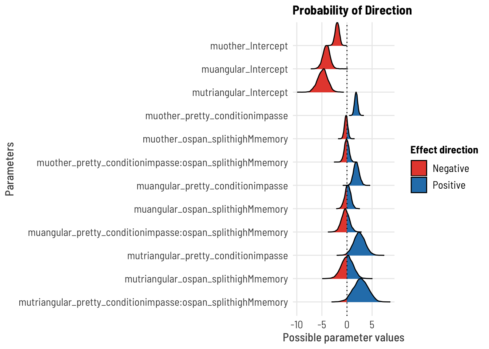

The purpose of this notebook is test the hypotheses that determined the design of the SGC3A study WITH OSPAN.
CODE
#UTILITIESlibrary(Hmisc) # %nin% operatorlibrary(broom) #tidy model outputlibrary(broom.mixed) #tidy mixed modelslibrary(mosaic) #favstatslibrary(svglite) #saving plots as svglibrary(distributional)#VISUALIZATION# library(ggpubr) #arrange plots# library(cowplot) #arrange shift function plotslibrary(ggformula) #easy graphs# # library(vcd) #mosaic plots# # library(vcdExtra) #mosaic plotslibrary(kableExtra) #printing tableslibrary(sjPlot) #visualize model coefficientslibrary(ggdist) #uncertainty vizlibrary(gghalves) # plots. in halflibrary(ggbeeswarm) # violin plot stuffslibrary(statsExpressions)library(ggstatsplot) #plots with statslibrary(modelsummary) #latex tables for models!#MODELLING# library(rstatix) #helpful testing functions incl wilcoxon, etclibrary(report) #easystats reportinglibrary(see) #easystats visualizationlibrary(performance) #easystats model diagnosticslibrary(parameters) #easystats model summary and vis# library(qqplotr) #confint on qq plot# library(gmodels) #contingency table and CHISQR# library(equatiomatic) #extract model equation# library(pscl) #zeroinfl / hurdle models library(lme4) #mixed effects modelslibrary(lmerTest) #for CIs in glmer# library(ggeffects) #visualization log regr models#MULTINOMIAL library(nnet) #multinomial logistic regression [not mixed] #no p valueslibrary(mclogit) #frequentist mixed multinomial logistic regression [mblogit] #gives p values#BAYESIANlibrary(cmdstanr) #executing stanlibrary(brms) #bayesian mixed multinomials [+ other bayesian reg models]library(bayestestR) library(tidyverse) #ALL THE THINGS#OUTPUT OPTIONSlibrary(dplyr, warn.conflicts =FALSE)options(dplyr.summarise.inform =FALSE)options(ggplot2.summarise.inform =FALSE)options(scipen=1, digits=3)#GRAPH THEMEING# theme_set(theme_minimal()) # Custom ggplot theme to make pretty plots# Get the font at https://fonts.google.com/specimen/Barlow+Semi+Condensedtheme_clean <-function() {theme_minimal(base_family ="Barlow Semi Condensed") +theme(panel.grid.minor =element_blank(),plot.title =element_text(family ="BarlowSemiCondensed-Bold"),axis.title =element_text(family ="BarlowSemiCondensed-Medium"),strip.text =element_text(family ="BarlowSemiCondensed-Bold",size =rel(1), hjust =0),strip.background =element_rect(fill ="grey80", color =NA))}set_theme(base =theme_clean())
TODO UPDATE Research Questions
In SGC3A-OSPAN we set out to answer the following question: Does posing a mental impasse improve performance on the interval graph comprehension task? Does WORKING MEMORY CAPACITY (as measured by the OSPAN task) explain performance on the graph comprehension task?
Experimental Hypothesis Learners posed with scenario designed to evoke a mental impasse will be more likely to correct interpret the graph.
H1A | Learners in the IMPASSE condition will score higher overall than learners in CONTROL.
H1B | Learners in the IMPASSE condition will be more likely to correctly answer the first question than learners in CONTROL.
We had no specific hypotheses with respect to how the OSPAN task affects performance. It is plausible that higher working memory allows one to persist in interpreting the coordinate system. It is also plausibe that higher working memory capacity facilitates incorrect interpretations that are more taxing on working memory (for example: end-time questions that require multiple visual projections.)
Null Hypothesis No significant differences in performance will exist between learners in the IMPASSE and CONTROL conditions.
Data was collected (online, via SONA) in Fall 2021. TODO ADDITIONAL SUMMER 2022? Note that approximately 200 subjects were run in Fall 2021, but only 133 of them completed the OSPAN task. Therefore subjects who did not complete the task are discarded from analysis.
CODE
title ="Participants by Condition and Data Collection Period"cols =c("Control Condition","Impasse Condition","Total for Period")cont <-table(df_subjects$term, df_subjects$condition)cont %>%addmargins() %>%kbl(caption = title, col.names = cols) %>%kable_classic()
Participants by Condition and Data Collection Period
Control Condition
Impasse Condition
Total for Period
fall21
65
68
133
Sum
65
68
133
Participants
CODE
#Describe participantssubject.stats <-df_subjects %>% dplyr::select(age) %>%unlist() %>%favstats()subject.stats$percent.male <- ((df_subjects %>%filter(gender=="Male") %>%count())/count(df_subjects))$nsubject.stats$percent.female <- ((df_subjects %>%filter(gender=="Female") %>%count())/count(df_subjects))$nsubject.stats$percent.other <- ((df_subjects %>%filter(gender %nin%c("Female","Male")) %>%count())/count(df_subjects))$ntitle ="Descriptive Statistics of Participant Age and Gender"subject.stats %>%kbl (caption = title) %>%kable_classic()%>%footnote(general ="Age in Years", general_title ="Note: ",footnote_as_chunk = T)
Descriptive Statistics of Participant Age and Gender
min
Q1
median
Q3
max
mean
sd
n
missing
percent.male
percent.female
percent.other
18
19
20
21
31
20.6
2.18
133
0
0.316
0.669
0.015
Note: Age in Years
Overall 133 participants (32 % male, 67 % female, 2 % other) undergraduate STEM majors at a public American University participated in exchange for course credit (age: 18 - 31 years).
OSPAN
CODE
title ="Descriptive Statistics of OSPAN Task Accuracy"ospan.stats <-rbind("MATH"= df_subjects %>% dplyr::select(OSPAN.math_acc) %>%unlist() %>%favstats(),"ORDER"= df_subjects %>% dplyr::select(OSPAN.order_acc) %>%unlist() %>%favstats(),"WEIGHTED"= df_subjects %>% dplyr::select(OSPAN.weighted) %>%unlist() %>%favstats())ospan.stats %>%kbl (caption = title) %>%kable_classic() %>%footnote(general ="MATH = %correct of all math questions; ORDER = % correct of OSPAN ordering (out of 30); WEIGHTED = math*ospan number correct", general_title ="Note: ",footnote_as_chunk = T)
Descriptive Statistics of OSPAN Task Accuracy
min
Q1
median
Q3
max
mean
sd
n
missing
MATH
0.517
0.897
0.931
0.966
1
0.924
0.085
133
0
ORDER
0.000
0.533
0.733
0.867
1
0.678
0.253
133
0
WEIGHTED
0.000
13.448
20.276
24.828
30
19.082
7.391
133
0
Note: MATH = %correct of all math questions; ORDER = % correct of OSPAN ordering (out of 30); WEIGHTED = math*ospan number correct
CODE
# #GGFORMULA | DENSITY HISTOGRAM med =median(df_subjects$OSPAN.weighted)gf_dhistogram(~OSPAN.weighted, data = df_subjects) %>%gf_vline(xintercept =~med, color ="red") +labs(x ="OSPAN (weighted) score",y ="% of subjects",title ="Distribution of OSPAN SCORE",subtitle ="line indicates median split")
CODE
#:::::::: STACKED PROPORTIONAL BAR CHARTdf_subjects %>%ggplot(data = .,mapping =aes(x = pretty_condition,fill = ospan_split)) +geom_bar(position ="fill" ) +#,color = "black") +scale_fill_brewer(palette ="Set1") +# facet_wrap(~ospan_split) + labs(title ="OSPAN SPLIT",x ="Condition",fill ="",subtitle="After taking a median split, comparable high(vs) low in each condition")
H1A | OVERALL ACCURACY
Research Question
Do Ss in the IMPASSE condition score higher across the entire task than those in the CONTROL group?
Hypothesis
(H1) Participants in the IMPASSE condition will be more likely to correctly interpret the graph than those in the CONTROL condition.
Data
data: df_items where q nin 6,9 (the 13 discriminating Qs ), df_subjects
[subject level]: accuracy (number of test phase qs correct from total s_NABS)
predictor: condition [between-subjects factor]
Analysis Strategy
Wilcoxon-Rank Sum (Mann-Whitney) test on subject-level total accuracy of test phase (s_NABS)
Mixed Logistic Regression accuracy ~ condition + (1 | subject ) + (1 | question)
model effect of condition on probability of correct response [during test phase] while accounting for subject (and item-level?) effects
Alternatives
Ordinal Mixed Logistic Regression on scaled_score
OLS Linear Regression: bimodal distribution at tails makes the mean a poor predictor; LMs violate assumptions of normally distributed residuals; both absolute and scaled scores yield non-normal residuals; no transformation of the outcome variables yield normal residuals
Notes
Also exploring:
Hurdle model (mixture model w/ binomial + [poisson or negbinom count; 0s from 1 DGP)
Zero Inflated model (mixture model w/ binomial + poisson or negbinom count; 0s from 2 DGPs)
Beta regression hurdle model? (mixture with location and scale parameters [mean, variance] and hurdles for floor and ceiling effects)
title ="Descriptive Statistics of Response Accuracy (Total % Correct)"tbl1 <- mosaic::favstats(~task_percent, data = df_s) tbl1 %>%kbl (caption = title) %>%kable_classic()
Descriptive Statistics of Response Accuracy (Total % Correct)
min
Q1
median
Q3
max
mean
sd
n
missing
0
0
0
0.462
1
0.248
0.368
133
0
CODE
title ="Descriptive Statistics of Response Accuracy (Total % Correct) BY CONDITION"tbl2 <- mosaic::favstats(task_percent ~ pretty_condition, data = df_s) tbl2 %>%kbl (caption = title) %>%kable_classic()
Descriptive Statistics of Response Accuracy (Total % Correct) BY CONDITION
pretty_condition
min
Q1
median
Q3
max
mean
sd
n
missing
control
0
0
0.000
0.077
1
0.15
0.301
65
0
impasse
0
0
0.077
0.769
1
0.34
0.402
68
0
Across both conditions, overall accuracy on the task ranges from 0 to 100 with a mean of 24.754. We see that the distribution of this outcome variable is clearly bimodal: with modes near the floor (0% correct) and ceiling (100% correct) of the scale. This bimodality is sensical considering the nature of the task, where each item in the task indexes a different information extraction operation over the same coordinate system.
A score of 100% indicates that the participant correctly interpreted the interval-coordinate system throughout the task, starting at the first question. A score of 0% indicates the individual never correctly interpreted the coordinate system. A score somewhere inbetween indicates that an individual deciphered the coordinate system sometime over the course the task.
WILCOXON RANK SUM (Mann-Whitney Test)
Non parametric alternative to t-test; compares median rather than mean by ranking data
Does not assume normality
Does not assume equal variance of samples (homogeneity of variance)
Test
CODE
#WILCOXON ON ACCURACY X OSPAN-SPLIT in LOW WORKING MEMORYdf_low <- df_s %>%filter(ospan_split =="low-memory")(w <-wilcox.test(df_low$task_percent ~ df_low$pretty_condition,paired =FALSE, alternative ="less")) #less, greater
Warning in wilcox.test.default(x = DATA[[1L]], y = DATA[[2L]], ...): cannot
compute exact p-value with ties
Wilcoxon rank sum test with continuity correction
data: df_low$task_percent by df_low$pretty_condition
W = 465, p-value = 0.1
alternative hypothesis: true location shift is less than 0
CODE
#WILCOXON ON ACCURACY X OSPAN-SPLIT in HIGHdf_high <- df_s %>%filter(ospan_split =="high-memory")(w <-wilcox.test(df_high$task_percent ~ df_high$pretty_condition,paired =FALSE, alternative ="less")) #less, greater
Warning in wilcox.test.default(x = DATA[[1L]], y = DATA[[2L]], ...): cannot
compute exact p-value with ties
Wilcoxon rank sum test with continuity correction
data: df_high$task_percent by df_high$pretty_condition
W = 292, p-value = 0.0003
alternative hypothesis: true location shift is less than 0
CODE
grouped_ggbetweenstats( data = df_s, type ="nonparametric",y = task_percent, x = pretty_condition, grouping.var = ospan_split)
Inference
A Wilcoxon-Rank sum test on task accuracy x condition for the low-memory participants indicate that impasse is not significantly higher. A Wilcoxon rank sum test on task accuracy x condition for high-memory participants indicate that impasse IS higher. Taken together, this indiates there may be an interaction between working memory and condition.
Scale for 'colour' is already present. Adding another scale for 'colour',
which will replace the existing scale.
Scale for 'colour' is already present. Adding another scale for 'colour',
which will replace the existing scale.
CODE
# # ggplot(data = df_s, aes( x = pretty_condition, y = task_percent)) + # ggdist::stat_halfeye(# alpha = 0.7,# point_colour = NA,# adjust = .5,# width = .5, .width = 0,# justification = -.5) +# geom_boxplot(# alpha = 0.1,# width = .2,# outlier.shape = NA# ) +# geom_point(# size = 2,# alpha = .5,# position = position_jitter(# seed = 1, width = .05, height = .02# )# ) # coord_flip() + theme_clean() + theme(legend.position = "blank")# p$layers[[3]]=NULL #remove default boxplot# e <- statsExpressions::two_sample_test(y = task_percent, x = pretty_condition, data = df_s,# type = "nonparametric", alternative = "less",# var.equal = FALSE)# #labels are layer 4# p + labs(title = "Distribution of Total Accuracy",# y = "Proportion of correct responses across task", x = "",# subtitle = "Impasse condition yields higher scores and greater variance",# caption=e$expression[[1]])
MIXED LOGISTIC REGRESSION [IXN!!]
Fit a mixed logistic regression (at the item level), predicting accuracy (absolute score) on all discriminating questions by condition; accounting for random effects of subject and item.
#confirm all factors is.factor(df_i$q) &&is.factor(df_i$subject) &&is.factor(df_i$pretty_condition) &&is.factor(df_i$accuracy) &&is.factor(df_i$ospan_split)
[1] TRUE
CODE
## 1 | SETUP RANDOM INTERCEPT SUBJECT#:: EMPTY MODEL (baseline, no random effect)print("Empty fixed model")
[1] "Empty fixed model"
CODE
m0 =glm(accuracy ~1, family ="binomial", data = df_i) # summary(m0)#:: RANDOM INTERCEPT SUBJECTprint("Subject intercept random model")
[1] "Subject intercept random model"
CODE
mm.rS <-glmer(accuracy ~ (1|subject), data = df_i, family ="binomial")# summary(mm.rS)# :: TEST random effectpaste("AIC decreases w/ new model?", m0$aic >AIC(logLik(mm.rS)))
[1] "AIC decreases w/ new model? TRUE"
CODE
test_lrt(m0,mm.rS) #same as anova(m0, m1, test = "Chi")
# Likelihood-Ratio-Test (LRT) for Model Comparison (ML-estimator)
Name | Model | df | df_diff | Chi2 | p
-------------------------------------------------
m0 | glm | 1 | | |
mm.rS | glmerMod | 2 | 1 | 996.89 | < .001
CODE
paste("Likelihood Ratio test is significant? p = ",(test_lrt(m0,mm.rS))$p[2])
[1] "Likelihood Ratio test is significant? p = 8.51171579642736e-219"
CODE
#:: RANDOM INTERCEPT SUBJECT + ITEMprint("Subject Intercept + Item intercept random model")
[1] "Subject Intercept + Item intercept random model"
CODE
mm.rSQ <-glmer(accuracy ~ (1|subject) + (1|q), data = df_i, family ="binomial")#summary(mm.rSQ)# :: TEST random effectpaste("AIC decreases w/ new model?", AIC(logLik(mm.rS)) >AIC(logLik(mm.rSQ)))
[1] "AIC decreases w/ new model? TRUE"
CODE
test_lrt(mm.rS, mm.rSQ) #same as anova(m0, m1, test = "Chi")
Some of the nested models seem to be identical and probably only vary in
their random effects.
# Likelihood-Ratio-Test (LRT) for Model Comparison (ML-estimator)
Name | Model | df | df_diff | Chi2 | p
-------------------------------------------------
mm.rS | glmerMod | 2 | | |
mm.rSQ | glmerMod | 3 | 1 | 68.40 | < .001
CODE
paste("Likelihood Ratio test is significant? p = ",(test_lrt(mm.rS, mm.rSQ))$p[2])
Some of the nested models seem to be identical and probably only vary in
their random effects.
[1] "Likelihood Ratio test is significant? p = 1.33590849571387e-16"
paste("AIC decreases w/ new model", AIC(logLik(mm.CrSQ)) >AIC(logLik(mm.COrSQ)) )
[1] "AIC decreases w/ new model TRUE"
CODE
test_lrt(mm.CrSQ,mm.COrSQ) #same as anova(m0, m1, test = "Chi")
# Likelihood-Ratio-Test (LRT) for Model Comparison (ML-estimator)
Name | Model | df | df_diff | Chi2 | p
-------------------------------------------------
mm.CrSQ | glmerMod | 4 | | |
mm.COrSQ | glmerMod | 6 | 2 | 7.84 | 0.020
CODE
paste("Likelihood Ratio test is significant? p = ",(test_lrt(mm.CrSQ,mm.COrSQ))$p[2])
[1] "Likelihood Ratio test is significant? p = 0.0198769795815358"
A likelihood ratio test indicates adding OSPAN as a fixed effect to a logistic regression model including a fixed effect for CONDITION and random intercepts for SUBJECT and QUESTION explains more variance in the data than the CONDITION + random-effects only model.
Describe
CODE
# best modelm <- mm.COrSQ#::::::::: PRINT MODEL print("PREDICTOR MODEL")
[1] "PREDICTOR MODEL"
CODE
summary(m)
Generalized linear mixed model fit by maximum likelihood (Laplace
Approximation) [glmerMod]
Family: binomial ( logit )
Formula: accuracy ~ pretty_condition * ospan_split + (1 | subject) + (1 |
q)
Data: df_i
AIC BIC logLik deviance df.resid
856 889 -422 844 1723
Scaled residuals:
Min 1Q Median 3Q Max
-6.035 -0.109 -0.026 -0.007 11.450
Random effects:
Groups Name Variance Std.Dev.
subject (Intercept) 34.85 5.90
q (Intercept) 1.14 1.07
Number of obs: 1729, groups: subject, 133; q, 13
Fixed effects:
Estimate Std. Error z value
(Intercept) -7.200 1.474 -4.88
pretty_conditionimpasse 2.119 1.648 1.29
ospan_splithigh-memory -0.845 1.412 -0.60
pretty_conditionimpasse:ospan_splithigh-memory 5.585 2.387 2.34
Pr(>|z|)
(Intercept) 1e-06 ***
pretty_conditionimpasse 0.199
ospan_splithigh-memory 0.550
pretty_conditionimpasse:ospan_splithigh-memory 0.019 *
---
Signif. codes: 0 '***' 0.001 '**' 0.01 '*' 0.05 '.' 0.1 ' ' 1
Correlation of Fixed Effects:
(Intr) prtty_ ospn_-
prtty_cndtn -0.495
ospn_splth- -0.612 0.513
prtty_cn:_- 0.112 -0.691 -0.566
#:::::::: MANUAL ONE-SIDED SIGTEST #note: anova and chi square are always one-tailed, but that is independent of being one-sided#https://www.ibm.com/support/pages/can-one-get-one-tailed-tests-logistic-regression-dividing-significance-levels-half# one-sided (right tail) z test for B COEFFICIENT#SANITY CHECK 2-tailed test should match the model output#NOTE ... NEED TO DO THIS FOR _EACH_ COEFFICIENT# tt <- 2*pnorm(summary(m)$coefficients[2,3], lower.tail = F)# paste("p value for two-tailed test, null B = 0 : ",round(tt,5))# ot <- pnorm(summary(m)$coefficients[2,3], lower.tail = F)# paste("BUT we want a one directional, null: B <= 0: ",round(ot,5))#:::::::: INTERPRET COEFFICIENTSse <-sqrt(diag(stats::vcov(m)))# table of estimates with 95% CIpaste("LOG ODDS")
[1] "LOG ODDS"
CODE
(tab <-cbind(Est =fixef(m), LL =fixef(m) -1.96* se, UL =fixef(m) +1.96* se))
Est LL UL
(Intercept) -7.200 -10.090 -4.31
pretty_conditionimpasse 2.119 -1.111 5.35
ospan_splithigh-memory -0.845 -3.613 1.92
pretty_conditionimpasse:ospan_splithigh-memory 5.585 0.907 10.26
CODE
paste("ODDS RATIOS")
[1] "ODDS RATIOS"
CODE
(e <-exp(tab))
Est LL UL
(Intercept) 7.47e-04 0.0000415 1.34e-02
pretty_conditionimpasse 8.32e+00 0.3290805 2.10e+02
ospan_splithigh-memory 4.30e-01 0.0269834 6.84e+00
pretty_conditionimpasse:ospan_splithigh-memory 2.66e+02 2.4758207 2.87e+04
Inference
(TODO Dissertation)
To quantify the effect of CONDITION and OSPAN on ACCURACY, we fit a mixed-effect binomial logistic regression model with random intercepts for subjects and questions. The structure of this model allows us to differentiate between random variance introduced by individual subjects and questions, versus the expected systematic variance of CONDITION and OSPAN. A likelihood ratio test indicates that a model including a fixed effect of CONDITION is explains significantly more variance in the data than an intercepts-only baseline model (\(\chi^2 (3,4) = 17.84, p < 0.001\)). The final model including main effect and interaction term of OSPAN is a significantly better fit than the CONDITION-only model (\(\chi^2 (4,6) = 8.84, p < 0.05\)).
The explanatory power of the entire model is substantial (\(conditional \ R^2 = 0/93\)) and the part related to the fixed effects CONDITION and OSPAN (\(marginal \ R^2\)) explains 18% of variance. There were no significant main effects of condition or impasse, but a rather a significant interaction between condition and ospan, ($e^{_1} = 266.00 p < 0.05 95 % CI [2.48, 28700] $)).
#ONLY FOR BAYESIAN VERSION# result <- rope(m)# plot(result)# # result <- pd(m)# plot(result)## | PLOT PREDICTIONS#SJPLOT | MODEL | PROBABILITIESplot_model(m, type="int",show.intercept =TRUE,show.values =TRUE,title ="Model Prediction | Probability of Accurate Response",axis.title =c("Condition","Probability of Accurate Response"))
CODE
#PLOT MODEL PREDICTIONplot_model(m, type ="pred")
$pretty_condition
$ospan_split
CODE
plot_model(m, type ="eff")
$pretty_condition
$ospan_split
CODE
# ylim(0,1) + # labs(# title = "Model Prediction | Probability of Accurate Response",# subtitle = "Impasse increases Probability of Correct Response"# )#TODO EMMEANS for the estimated marginal means OR USE IXN PLOT
Do Ss in the IMPASSE condition offer less-orthogonal interpretations across the test phase questions?
While absolute accuracy score tells us whether a participant successfully interpreted the coordinate system, it doesnt allow us to differentiate between different kinds of incorrect interpretations. Here we examine the (categorical) interpretation state type based on the nature of subjects response, and determine if these interpretations differ by experimental condition. State is a 3-category variable that groups the following interpretations:
orthogonal [reference category] includes orthogonal and satisficing responses ==> indicates a primarily orthogonal state of coordinate system understanding
other includes: blank, reference point, responses that cant be classified (including selecting all datapoints), => indicates an uncertain or unidentifiable state of coordinate system understanding, but one that is distinctly not orthogonal nor triangular
angular includes lines connecting responses as well as responses that include both orthogonal and triangular answers => indicates some degree of angular/triangular coordinate understanding
triangular includes correct triangular and lines connecting responses as well as responses that include both orthogonal and triangular answers => indicates some degree of angular/triangular coordinate understanding
Research Question
Does Ss in the impasse condition produce less orthogonal responses across questions?
Hypothesis
H1A | Ss in the IMPASSE condition will have a higher likelihood of producing unknown and triangle-like response states across all items
Data
data: df_items where q nin 6,9 (13 discriminant test phase items)
outcome: state ( 3 level factor from high_interpretation )
predictor: condition [between-subjects factor]
Analysis Strategy
MIXED Multinomial (Logistic) Regression on state predicted by condition
Alternative:
MIXED Ordinal regression on state (doesnt meet proportional odds assumption-I think)
MIXED Multinomial or Ordinal regression on high_interpretation (some cells are 0, produces problems)
#::::::::::::DESCRIPTIVEStable(df_i$state, df_i$pretty_condition) %>%addmargins(2) %>%#display sum for rowprop.table(margin=2) %>%#return proportion (of column)addmargins(1) #sanity check sum of columns
control impasse Sum
orthogonal 0.6710 0.3235 0.4933
other 0.1396 0.2636 0.2030
tri-like 0.0260 0.0509 0.0388
triangular 0.1633 0.3620 0.2649
Sum 1.0000 1.0000 1.0000
CODE
(t <-table(df_i$state, df_i$pretty_condition, df_i$ospan_split) %>%addmargins(2) %>%#display sum for rowaddmargins(1)) #sanity check sum of columns
, , = low-memory
control impasse Sum
orthogonal 269 173 442
other 61 147 208
tri-like 10 30 40
triangular 63 118 181
Sum 403 468 871
, , = high-memory
control impasse Sum
orthogonal 298 113 411
other 57 86 143
tri-like 12 15 27
triangular 75 202 277
Sum 442 416 858
MIXED MULTINOMIAL REGRESSION
Does condition affect the response state of of items across the task?
Fit a MIXED logistic regression predicting interpretation state (k=3) by condition(k = 2).
mblogit version wouldnt coverge, so using brms
Fit Model [brms]
CODE
# CONDITION ONLY MODELmm.cat.CrSQ <-brm( state ~ pretty_condition + (1|subject) + (1|q), data = df_i, family ="categorical",chains =4, iter =2000, warmup =1000,cores =4, seed =1234,backend ="cmdstanr",file ="analysis/SGC3A/models/sgc3a_brms_mixedcat.condition._state_ONLINE.rds")summary(mm.cat.CrSQ)
Family: categorical
Links: muother = logit; mutrilike = logit; mutriangular = logit
Formula: state ~ pretty_condition + (1 | subject) + (1 | q)
Data: df_i (Number of observations: 1729)
Draws: 4 chains, each with iter = 2000; warmup = 1000; thin = 1;
total post-warmup draws = 4000
Group-Level Effects:
~q (Number of levels: 13)
Estimate Est.Error l-95% CI u-95% CI Rhat Bulk_ESS
sd(muother_Intercept) 1.48 0.37 0.92 2.31 1.00 982
sd(mutrilike_Intercept) 2.43 0.78 1.35 4.36 1.00 1104
sd(mutriangular_Intercept) 1.46 0.36 0.91 2.34 1.00 1334
Tail_ESS
sd(muother_Intercept) 1577
sd(mutrilike_Intercept) 1718
sd(mutriangular_Intercept) 2217
~subject (Number of levels: 133)
Estimate Est.Error l-95% CI u-95% CI Rhat Bulk_ESS
sd(muother_Intercept) 0.91 0.13 0.66 1.19 1.00 1572
sd(mutrilike_Intercept) 1.79 0.31 1.23 2.46 1.00 1259
sd(mutriangular_Intercept) 5.21 0.61 4.17 6.52 1.00 903
Tail_ESS
sd(muother_Intercept) 2399
sd(mutrilike_Intercept) 1941
sd(mutriangular_Intercept) 1805
Population-Level Effects:
Estimate Est.Error l-95% CI u-95% CI Rhat
muother_Intercept -2.09 0.43 -2.97 -1.27 1.02
mutrilike_Intercept -5.27 0.91 -7.13 -3.61 1.00
mutriangular_Intercept -4.90 0.96 -6.90 -3.13 1.01
muother_pretty_conditionimpasse 1.78 0.24 1.32 2.28 1.00
mutrilike_pretty_conditionimpasse 2.25 0.52 1.25 3.29 1.00
mutriangular_pretty_conditionimpasse 4.16 1.06 2.23 6.40 1.00
Bulk_ESS Tail_ESS
muother_Intercept 510 585
mutrilike_Intercept 880 1107
mutriangular_Intercept 551 1089
muother_pretty_conditionimpasse 1930 2330
mutrilike_pretty_conditionimpasse 1655 2106
mutriangular_pretty_conditionimpasse 498 1109
Draws were sampled using sample(hmc). For each parameter, Bulk_ESS
and Tail_ESS are effective sample size measures, and Rhat is the potential
scale reduction factor on split chains (at convergence, Rhat = 1).
CODE
# CONDITION + OSPAN MODELmm.cat.COrSQ <-brm( state ~ pretty_condition*ospan_split + (1|subject) + (1|q), data = df_i, family ="categorical",chains =4, iter =2000, warmup =1000,cores =4, seed =1234,backend ="cmdstanr",file ="analysis/SGC3A/models/sgc3a_brms_mixedcat.conditionospan._state_ONLINE.rds")summary(mm.cat.COrSQ)
#which model is better?compare_models(mm.cat.CrSQ, mm.cat.COrSQ)
Possible multicollinearity between b_mutriangular_pretty_conditionimpasse and b_mutriangular_Intercept (r = 0.72). This might lead to inappropriate results. See 'Details' in '?rope'.
Possible multicollinearity between b_muother_pretty_conditionimpasse:ospan_splithighMmemory and b_muother_ospan_splithighMmemory (r = 0.71), b_mutrilike_pretty_conditionimpasse:ospan_splithighMmemory and b_mutrilike_ospan_splithighMmemory (r = 0.75), b_mutriangular_pretty_conditionimpasse:ospan_splithighMmemory and b_mutriangular_ospan_splithighMmemory (r = 0.73). This might lead to inappropriate results. See 'Details' in '?rope'.
## | PLOT PARAMETERS #SJPLOT | MODEL | ODDS RATIOplot_model(m, vline.color ="red", show.intercept =TRUE, show.values =TRUE,p.threshold =0.1, #manually adjust to account for directional testci.lvl =0.90 ) +#manually adjusted for directional test labs(title ="Model Estimate | Odds Ratio",subtitle ="",x ="Condition")
Warning in RColorBrewer::brewer.pal(n, pal): n too large, allowed maximum for palette Set1 is 9
Returning the palette you asked for with that many colors
Warning in RColorBrewer::brewer.pal(n, pal): n too large, allowed maximum for palette Set1 is 9
Returning the palette you asked for with that many colors
Possible multicollinearity between b_muother_pretty_conditionimpasse:ospan_splithighMmemory and b_muother_ospan_splithighMmemory (r = 0.71), b_mutrilike_pretty_conditionimpasse:ospan_splithighMmemory and b_mutrilike_ospan_splithighMmemory (r = 0.75), b_mutriangular_pretty_conditionimpasse:ospan_splithighMmemory and b_mutriangular_ospan_splithighMmemory (r = 0.73). This might lead to inappropriate results. See 'Details' in '?equivalence_test'.
Possible multicollinearity between b_muother_pretty_conditionimpasse:ospan_splithighMmemory and b_muother_ospan_splithighMmemory (r = 0.71), b_mutrilike_pretty_conditionimpasse:ospan_splithighMmemory and b_mutrilike_ospan_splithighMmemory (r = 0.75), b_mutriangular_pretty_conditionimpasse:ospan_splithighMmemory and b_mutriangular_ospan_splithighMmemory (r = 0.73). This might lead to inappropriate results. See 'Details' in '?rope'.
CODE
plot(result)
CODE
result <-pd(m) plot(result)

CODE
## | PLOT PREDICTIONS#SJPLOT | MODEL | PROBABILITIESplot_model(m, type="int",show.intercept =TRUE,show.values =TRUE,title ="Model Prediction | Probability of Accurate Response",axis.title =c("Condition","Probability of Accurate Response"))
Note: uncertainty of error terms are not taken into account. You may want to use `rstantools::posterior_predict()`.
CODE
#PLOT MODEL PREDICTION# plot_model(m, type = "pred") # plot_model(m, type = "eff") # ylim(0,1) + # labs(# title = "Model Prediction | Probability of Accurate Response",# subtitle = "Impasse increases Probability of Correct Response"# )
CODE
#DISPLAY MODEL AS TABLEtab_model(mm.cat.CrSQ)
'bayes_R2' is not defined for unordered categorical models.
Do Ss in the IMPASSE condition have a higher likelihood of producing a correct response to the first question?
The graph comprehension task includes 15 questions completed in sequence. But the first question the reader encounters (Q1) is the most important, as it is their first exposure to the unconventional triangular coordinate system.
Research Question
Does the frequency of correct (vs) incorrect responses on the first question differ by condition? [Is response accuracy independent of condition?]
Hypothesis
H1A | Ss in the IMPASSE condition will have a higher likelihood of correctly responding to the first question than those in the CONTROL condition
Data
data: df_items where q == 1
outcome: accuracy ( factor(incorrect/correct) from score_niceABS [absolute score]
predictor: condition [between-subjects factor]
Analysis Strategy
Logistic Regression on accuracy predicted by condition
account for difference in odds of correct score by condition
Alternatives:
Chi-Square test of independence on outcome accuracy by condition
Notes
CHIQ SQR is simplest method to examine independence of two categorical factors; LOGISTIC REGRESSION is recommended for binomial ~ continuous; though with regression we can quantify the size of the effect and overall model fit
independence assumption : (CHI SQR) as we only consider responses on the first question, each observation corresponds to an individual subject, and are thus independent
cell frequency : (CHI SQR) expected frequency in each cell of the contingency table is greater than 5 (more than 5 correct , more than 5 incorrect responses)
#:::::::: STACKED BAR CHARTdf %>%ggplot(data = .,mapping =aes(x = pretty_condition,fill = accuracy)) +geom_bar(position ="fill" ) +#,color = "black") +scale_fill_brewer(palette ="Set1") +facet_wrap(~ospan_split) +labs(#y = "Correct Response on Q 1",title ="Q1 Accuracy",x ="Condition",fill ="",subtitle="Impasse Condition yields a greater proportion of correct responses")
TODO DESCRIPTIONS
CODE
#::::::::::::DESCRIPTIVESpaste("Proportions of Correct Responses by Condition")
[1] "Proportions of Correct Responses by Condition"
CODE
table(df$accuracy, df$pretty_condition) %>%addmargins(2) %>%#display sum for rowprop.table(margin=2) %>%#return proportion (of column)addmargins(1) #sanity check sum of columns
control impasse Sum
incorrect 0.892 0.765 0.827
correct 0.108 0.235 0.173
Sum 1.000 1.000 1.000
CODE
paste("Number of Correct Responses by Condition")
[1] "Number of Correct Responses by Condition"
CODE
table(df$accuracy, df$pretty_condition, df$ospan_split) %>%addmargins(2) %>%#display sum for rowaddmargins(1) #sanity check sum of columns
, , = low-memory
control impasse Sum
incorrect 28 31 59
correct 3 5 8
Sum 31 36 67
, , = high-memory
control impasse Sum
incorrect 30 21 51
correct 4 11 15
Sum 34 32 66
CHI SQUARE [YES]
CODE
#CHI SQUARE ON ACCURACY X OSPAN-SPLIT in LOW WORKING MEMORYdf_low <- df %>%filter(ospan_split =="low-memory")# table(df_low$pretty_condition, df_low$accuracy)chisq.test( x = df_low$pretty_condition, y = df_low$accuracy, correct =TRUE)
Warning in chisq.test(x = df_low$pretty_condition, y = df_low$accuracy, : Chi-
squared approximation may be incorrect
Pearson's Chi-squared test with Yates' continuity correction
data: df_low$pretty_condition and df_low$accuracy
X-squared = 0.02, df = 1, p-value = 0.9
CODE
#CHI SQUARE ON ACCURACY X OSPAN-SPLIT in HIGH WORKING MEMORYdf_high <- df %>%filter(ospan_split =="high-memory")#table(df_high$pretty_condition, df_high$accuracy)chisq.test( x = df_high$pretty_condition, y = df_high$accuracy,correct =TRUE)
Pearson's Chi-squared test with Yates' continuity correction
data: df_high$pretty_condition and df_high$accuracy
X-squared = 4, df = 1, p-value = 0.06
CODE
#significant if correct = FALSE
TODO why do these chisqrs not match the grouped bar stats? ::: {.cell}
CODE
# INTERACTION (OSPAN X CONDITION)grouped_ggbarstats( data = df, x = accuracy, y = pretty_condition, grouping.var = ospan_split,type ="parametric")
CODE
# MAIN EFFECT CONDITION (yes)# ggbarstats( data = df, x = accuracy, y = pretty_condition, # type = "nonparametric")# MAIN EFFECT OSPAN (none)# ggbarstats( data = df, x = accuracy, y = ospan_split, # type = "nonparametric")
:::
There is no non-parametric version of two-way ANOVA, so we perform individual CHI-SQR tests. We split the data into two groups (low memory, and high memory, based on the median split). For each, we run a CHI SQR test of independence testing the null hypothesis that Q1 ACCURACY is independent of CONDITION. In the low-working memory group, we cannot reject the null hypothesis, suggesting that accuracy does not differ by condition. But in the HIGH working memory group we do reject the null hypothesis. The proportion of correct responses in IMPASSE is much higher than in CONTROL, but only in the HIGH WORKING MEMORY group.
LOGISTIC REGRESSION (MAIN EFFECT CONDITION)
TODO:: consider weighted(centered) continuous vs ospan split
Fit a logistic regression predicting accuracy (absolute score) (n = 133) by condition (k = 2).
Parameter estimate: \(\beta_{0}\) = Log Odds of (correct) responses in CONTROL condition
\(e^{\beta_{0}}\) = ODDS of correct response in CONTROL condition
Parameter estimate: \(\beta_{1}\) = \(\beta_{1impasse}\) Log Odds (Log OR; change in odds for correct response in impasse (vs) control [log scale])
\(e^{\beta_{1}}\) = ODDS RATIO of correct response in IMPASSE (vs) CONTROL
Null hypothesis:\(\beta_{impasse} \le 0\) the odds for a correct response does not change, or decreases
Alternative hypothesis:\(\beta_{impasse} \gt 0\) the odds of a correct response increases
Fit CONDITION Model
First, we fit a logistic regression with condition as predictor, and compare its fit to an empty (intercept-only) model.
CODE
# MODEL FITTING ::::::::#: 1 EMPTY MODEL baseline glm model intercept onlym.0=glm(accuracy ~1, data = df, family ="binomial")# print("EMPTY MODEL")# summary(m0)#: 2 CONDITION modelm.C <-glm( accuracy ~ pretty_condition, data = df, family ="binomial")# print("PREDICTOR MODEL")# summary(m1)#: 2 TEST SUPERIOR FITpaste("AIC wth predictor is lower than empty model?", m.0$aic > m.C$aic)
[1] "AIC wth predictor is lower than empty model? TRUE"
CODE
test_lrt(m.0,m.C) #same as anova(m0, m1, test = "Chi")
# Likelihood-Ratio-Test (LRT) for Model Comparison (ML-estimator)
Name | Model | df | df_diff | Chi2 | p
------------------------------------------
m.0 | glm | 1 | | |
m.C | glm | 2 | 1 | 3.88 | 0.049
CODE
paste("Likelihood Ratio test is significant? p = ",(test_lrt(m.0,m.C))$p[2])
[1] "Likelihood Ratio test is significant? p = 0.0489409367734944"
CODE
summary(m.C)
Call:
glm(formula = accuracy ~ pretty_condition, family = "binomial",
data = df)
Deviance Residuals:
Min 1Q Median 3Q Max
-0.733 -0.733 -0.477 -0.477 2.111
Coefficients:
Estimate Std. Error z value Pr(>|z|)
(Intercept) -2.115 0.400 -5.28 1.3e-07 ***
pretty_conditionimpasse 0.936 0.492 1.90 0.057 .
---
Signif. codes: 0 '***' 0.001 '**' 0.01 '*' 0.05 '.' 0.1 ' ' 1
(Dispersion parameter for binomial family taken to be 1)
Null deviance: 122.49 on 132 degrees of freedom
Residual deviance: 118.62 on 131 degrees of freedom
AIC: 122.6
Number of Fisher Scoring iterations: 4
CODE
##### Fit OSPAN Models#: 3 OSPAN ONLY MODEL m.O =glm(accuracy ~ ospan_split, data = df, family ="binomial")# print("EMPTY MODEL")# summary(m0)#: 3 TEST SUPERIOR FITpaste("AIC OSPAN predictor is lower than CONDITION model?", m.C$aic > m.O$aic)
[1] "AIC OSPAN predictor is lower than CONDITION model? FALSE"
ADD OSPAN ::: {.cell}
CODE
#: 4 OSPAN + CONDITION modelm.CO <-glm( accuracy ~ pretty_condition + ospan_split, data = df, family ="binomial")# print("PREDICTOR MODEL")summary(m.CO)
Call:
glm(formula = accuracy ~ pretty_condition + ospan_split, family = "binomial",
data = df)
Deviance Residuals:
Min 1Q Median 3Q Max
-0.870 -0.599 -0.559 -0.373 2.323
Coefficients:
Estimate Std. Error z value Pr(>|z|)
(Intercept) -2.629 0.523 -5.03 5e-07 ***
pretty_conditionimpasse 1.002 0.499 2.01 0.045 *
ospan_splithigh-memory 0.851 0.487 1.75 0.081 .
---
Signif. codes: 0 '***' 0.001 '**' 0.01 '*' 0.05 '.' 0.1 ' ' 1
(Dispersion parameter for binomial family taken to be 1)
Null deviance: 122.49 on 132 degrees of freedom
Residual deviance: 115.42 on 130 degrees of freedom
AIC: 121.4
Number of Fisher Scoring iterations: 4
#: 4 TEST SUPERIOR FITpaste("AIC wth OSPAN is lower than CONDITION only model?", m.C$aic > m.CO$aic)
[1] "AIC wth OSPAN is lower than CONDITION only model? TRUE"
CODE
test_lrt(m.C,m.CO) #same as anova(m0, m1, test = "Chi")
# Likelihood-Ratio-Test (LRT) for Model Comparison (ML-estimator)
Name | Model | df | df_diff | Chi2 | p
------------------------------------------
m.C | glm | 2 | | |
m.CO | glm | 3 | 1 | 3.19 | 0.074
CODE
paste("Likelihood Ratio test is significant? p = ",(test_lrt(m.C,m.CO))$p[2])
[1] "Likelihood Ratio test is significant? p = 0.0739762476630023"
::: Adding OSPAN as a predictor (no interaction) decreases AIC, but does not improve fit (LRT)
INTERACTION MODEL ::: {.cell}
CODE
#: 5 OSPAN + CONDITION INTERACTION modelm.C.O <-glm( accuracy ~ pretty_condition * ospan_split, data = df, family ="binomial")x <-glm( accuracy ~ pretty_condition + ospan_split + pretty_condition*ospan_split, data = df, family ="binomial")# print("PREDICTOR MODEL")summary(m.C.O)
Call:
glm(formula = accuracy ~ pretty_condition * ospan_split, family = "binomial",
data = df)
Deviance Residuals:
Min 1Q Median 3Q Max
-0.918 -0.547 -0.500 -0.451 2.161
Coefficients:
Estimate Std. Error z value
(Intercept) -2.234 0.607 -3.68
pretty_conditionimpasse 0.409 0.775 0.53
ospan_splithigh-memory 0.219 0.808 0.27
pretty_conditionimpasse:ospan_splithigh-memory 0.959 1.011 0.95
Pr(>|z|)
(Intercept) 0.00024 ***
pretty_conditionimpasse 0.59782
ospan_splithigh-memory 0.78656
pretty_conditionimpasse:ospan_splithigh-memory 0.34295
---
Signif. codes: 0 '***' 0.001 '**' 0.01 '*' 0.05 '.' 0.1 ' ' 1
(Dispersion parameter for binomial family taken to be 1)
Null deviance: 122.49 on 132 degrees of freedom
Residual deviance: 114.54 on 129 degrees of freedom
AIC: 122.5
Number of Fisher Scoring iterations: 4
CODE
car::Anova(m.C.O, type =3)
Analysis of Deviance Table (Type III tests)
Response: accuracy
LR Chisq Df Pr(>Chisq)
pretty_condition 0.284 1 0.59
ospan_split 0.074 1 0.79
pretty_condition:ospan_split 0.887 1 0.35
CODE
#: 5 TEST SUPERIOR FITpaste("AIC wth OSPAN IXN lower than CONDITION + OSPAN only model?", m.CO$aic > m.C.O$aic)
[1] "AIC wth OSPAN IXN lower than CONDITION + OSPAN only model? FALSE"
CODE
test_lrt(m.CO,m.C.O)
# Likelihood-Ratio-Test (LRT) for Model Comparison (ML-estimator)
Name | Model | df | df_diff | Chi2 | p
-------------------------------------------
m.CO | glm | 3 | | |
m.C.O | glm | 4 | 1 | 0.89 | 0.346
CODE
paste("AIC wth OSPAN IXN is lower than CONDITION only model?", m.C$aic > m.C.O$aic)
[1] "AIC wth OSPAN IXN is lower than CONDITION only model? TRUE"
CODE
test_lrt(m.C,m.C.O)
# Likelihood-Ratio-Test (LRT) for Model Comparison (ML-estimator)
Name | Model | df | df_diff | Chi2 | p
-------------------------------------------
m.C | glm | 2 | | |
m.C.O | glm | 4 | 2 | 4.08 | 0.130
:::
Adding OSPAN interaction does not improve model fit over condition-only model, or main effects only model.
Describe
CODE
#set modelm <- m.C.O# DESCRIBE MODEL ::::::::::::::::::::::::::::::::::::: print("PREDICTOR MODEL [default two-tailed sig test]")
[1] "PREDICTOR MODEL [default two-tailed sig test]"
CODE
summary(m)
Call:
glm(formula = accuracy ~ pretty_condition * ospan_split, family = "binomial",
data = df)
Deviance Residuals:
Min 1Q Median 3Q Max
-0.918 -0.547 -0.500 -0.451 2.161
Coefficients:
Estimate Std. Error z value
(Intercept) -2.234 0.607 -3.68
pretty_conditionimpasse 0.409 0.775 0.53
ospan_splithigh-memory 0.219 0.808 0.27
pretty_conditionimpasse:ospan_splithigh-memory 0.959 1.011 0.95
Pr(>|z|)
(Intercept) 0.00024 ***
pretty_conditionimpasse 0.59782
ospan_splithigh-memory 0.78656
pretty_conditionimpasse:ospan_splithigh-memory 0.34295
---
Signif. codes: 0 '***' 0.001 '**' 0.01 '*' 0.05 '.' 0.1 ' ' 1
(Dispersion parameter for binomial family taken to be 1)
Null deviance: 122.49 on 132 degrees of freedom
Residual deviance: 114.54 on 129 degrees of freedom
AIC: 122.5
Number of Fisher Scoring iterations: 4
CODE
car::Anova(m, type=3)
Analysis of Deviance Table (Type III tests)
Response: accuracy
LR Chisq Df Pr(>Chisq)
pretty_condition 0.284 1 0.59
ospan_split 0.074 1 0.79
pretty_condition:ospan_split 0.887 1 0.35
CODE
# MANUAL ONE-SIDED SIGTEST ::::::::::::::::::::::::::: # one-sided (right tail) z test for B COEFFICIENT#https://stats.stackexchange.com/questions/330655/strategy-for-a-one-sided-test-of-glms-coefficients#SANITY CHECK 2-tailed test should match the model output# tt <- 2*pnorm(summary(m)$coefficients[2:4], lower.tail = F)# paste("p value for two-tailed test, null B = 0 : ",round(tt,3))# ot <- pnorm(summary(m)$coefficients[2:4], lower.tail = F)# paste("BUT we want a one tailed directional, null: B <= 0: ",round(ot,3))# paste("adjusted confint for directional hypothesis")# (dcint <- confint(m, level = 0.90)) # get 90% for right side))# # https://stats.stackexchange.com/questions/20734/is-a-1-sided-90-prediction-interval-equivalent-to-a-2-sided-95-prediction-inte#:::::::: INTERPRET COEFFICIENTS# print("Confidence Interval - LOG ODDS")# confint(m1) #not adjusted for 1-tailedprint("Coefficients - ODDS RATIOS")
[1] "Coefficients - ODDS RATIOS"
CODE
(e <-cbind( exp(coef(m)), exp(confint(m)))) #exponentiated, not adjusted
# (e <- cbind( exp(coef(m)), exp(dcint))) #exponentiated, adjusted#TODO INTERACTIONS & ESTIMATED MARGINAL MEANS # print("MODEL PREDICTIONS")# Retrieve predictions as probabilities # (for each level of the predictor)# pred.control <- predict(m,data.frame(pretty_condition="control"),type="response")#this should match : plogis(intercept coefficient)# paste("Probability of success in control,", pred.control)# pred.impasse <- predict(m,data.frame(pretty_condition="impasse"),type="response")#this should match : plogis(intercept coefficient + predictor coeff)# paste("Probability of success in impasse,", pred.impasse)
Inference
TODO double check chisqrs vs grouped_barstats. Why is the tests not the same. Otherwise report mm.C as ospan didnt improve fit
Visualize
CODE
## | PLOT PARAMETERS #SJPLOT | MODEL | ODDS RATIOplot_model(m, vline.color ="red", show.intercept =TRUE, show.values =TRUE,p.threshold =0.1, #manually adjust to account for directional testci.lvl =0.90 ) +#manually adjusted for directional test labs(title ="Model Estimate | Odds Ratio",subtitle ="",x ="Condition")
#ONLY FOR BAYESIAN VERSION# result <- rope(m)# plot(result)# # result <- pd(m)# plot(result)## | PLOT PREDICTIONS#SJPLOT | MODEL | PROBABILITIESplot_model(m, type="int",show.intercept =TRUE,show.values =TRUE,title ="Model Prediction | Probability of Accurate Response",axis.title =c("Condition","Probability of Accurate Response"))
CODE
#PLOT MODEL PREDICTIONplot_model(m, type ="pred")
$pretty_condition
$ospan_split
CODE
plot_model(m, type ="eff")
$pretty_condition
$ospan_split
CODE
# ylim(0,1) + # labs(# title = "Model Prediction | Probability of Accurate Response",# subtitle = "Impasse increases Probability of Correct Response"# )
Do Ss in the IMPASSE condition offer less-orthogonal interpretations on first question?
While absolute accuracy score tells us whether a participant successfully interpreted the coordinate system, it doesnt allow us to differentiate between different kinds of incorrect interpretations. Here we examine the (categorical) interpretation state type based on the nature of subjects response, and determine if these interpretations differ by experimental condition. State is a 3-category derived response variable that groups the following interpretations:
orthogonal [reference category] includes orthogonal and satisficing responses ==> indicates a primarily orthogonal state of coordinate system understanding
other includes: blank, reference point, responses that cant be classified (including selecting all datapoints), => indicates an uncertain or unidentifiable state of coordinate system understanding, but one that is distinctly not orthogonal nor triangular
angular includes lines connecting responses as well as responses that include both orthogonal and triangular answers => indicates some degree of angular/triangular coordinate understanding
triangular includes correct triangular and lines connecting responses as well as responses that include both orthogonal and triangular answers => indicates some degree of angular/triangular coordinate understanding
Research Question
Does Ss in the impasse condition produce less orthogonal responses on the first question?
Hypothesis
H1A | Ss in the IMPASSE condition will have a higher likelihood of producing unknown and and triangle-like response states, relative to orthogonal response states, on the first question
Data
data: df_items where q == 1
outcome: state ( 4 level factor from 5 level high_interpretation )
predictor: condition [between-subjects factor]
Analysis Strategy
Multinomial (Logistic) Regression on state predicted by condition
Alternative:
Ordinal regression on state; but model doesnt satisfy proportional odds assumption (parallel slopes)
Multinomial or Ordinal regression on high_interpretation (5 category interpretation state which distinguishes between uncertain (blank, reference) unclassifiable, triangle-like and true triangular.) There are some cells with zeros, however (no uncertain responses in control) which means the model cant accurately estimate those comparisons
#::::::::::::DESCRIPTIVEStable(df$state, df$pretty_condition) %>%addmargins(2) %>%#display sum for rowprop.table(margin=2) %>%#return proportion (of column)addmargins(1) #sanity check sum of columns
control impasse Sum
orthogonal 0.8154 0.2647 0.5338
other 0.0462 0.3824 0.2180
tri-like 0.0308 0.1176 0.0752
triangular 0.1077 0.2353 0.1729
Sum 1.0000 1.0000 1.0000
CODE
(t <-table(df$state, df$pretty_condition, df$ospan_split) %>%addmargins(2) %>%#display sum for rowaddmargins(1)) #sanity check sum of columns
, , = low-memory
control impasse Sum
orthogonal 26 15 41
other 1 13 14
tri-like 1 3 4
triangular 3 5 8
Sum 31 36 67
, , = high-memory
control impasse Sum
orthogonal 27 3 30
other 2 13 15
tri-like 1 5 6
triangular 4 11 15
Sum 34 32 66
MULTINOMIAL REGRESSION
TODO:: USE MBLOGIT VERSION WITH P VALUES IN MODEL
Does condition affect the response state of Q1?
Fit a logistic regression predicting interpretation state (k=3) by condition(k = 2).
3 equations will be estimated (# categories - 1); each representing the odds of answering in that particular interpretation (vs) the reference category (orthogonal answer) [essentially a series of binary logistic regressions, but instead of incorrect/correct, comparing [reference category] vs [this category])
For each equation:
\(\beta_{0}\)= Log Odds of [this category type vs. reference category type) response in CONTROL condition
\(e^{\beta_{0}}\)= ODDS of [this category type vs. reference category type] response in CONTROL condition
\(\beta_{1}\)=\(\beta_{1impasse}\)Log Odds (Log OR; change in odds for [this category] type response in impasse (vs) control [log scale])
\(e^{\beta_{1}}\)= ODDS RATIO of [this. vs reference category type] response in IMPASSE (vs) CONTROL
Two-tailed NHST Null hypothesis:\(\beta_{impasse} = 0\)the odds for [this category of response vs. reference] are not different for IMPASSE condition
Alternative hypothesis:\(\beta_{impasse} \ne 0\)the odds of [this category of response vs. reference] increases or decreases for IMPASSE condition
Fit CONDITION Model
CODE
#check reference level print("Categories (first is reference)")
[1] "Categories (first is reference)"
CODE
levels(df$state)
[1] "orthogonal" "other" "tri-like" "triangular"
CODE
#FIT EMPTY MODEL# print("EMPTY MODEL")catm.0<-multinom(state ~1, data = df)
# weights: 8 (3 variable)
initial value 184.377150
iter 10 value 155.544397
final value 154.972366
converged
CODE
# summary(catm.0)#FIT PREDICTOR MODEL# print("PREDICTOR MODEL")catm.C <-multinom(formula = state ~ pretty_condition, data = df, model =TRUE)
# weights: 12 (6 variable)
initial value 184.377150
iter 10 value 131.798993
final value 131.798569
converged
CODE
# summary(catm.C)#COMPARE MODEL FITpaste("AIC wth predictor is lower than empty model?", catm.0$AIC > catm.C$AIC)
[1] "AIC wth predictor is lower than empty model? TRUE"
CODE
test_lrt(catm.0, catm.C)
# Likelihood-Ratio-Test (LRT) for Model Comparison (ML-estimator)
Name | Model | df | df_diff | Chi2 | p
-------------------------------------------------
catm.0 | multinom | 3 | | |
catm.C | multinom | 6 | 3 | 46.35 | < .001
CODE
##compare bayesian version#library(brms)# b.cat <- brm( state2 ~ pretty_condition, data = df, family = "categorical", backend = "cmdstanr")# summary(b.cat)# plot_model(b.cat)# report(b.cat)# coefficient estimates are very simliar to catm. super cool!##compare mclogit version#"baseline-category logit model# https://www.elff.eu/software/mclogit/manual/mblogit/# blm1 <- mblogit(state2 ~ pretty_condition , data = df)# summary(blm1)#identical to catm. super cool!
AIC in predictor model is less than empty model, and likelihood ratio test indicates predictor model is significantly better fit to the sample data than the empty (intercept only) model.
Fit OSPAN Model
CODE
#FIT OSPAN only MODEL# print("OSPAN ONLY MODEL")catm.O <-multinom(state ~ ospan_split, data = df)
# weights: 12 (6 variable)
initial value 184.377150
iter 10 value 152.820024
final value 152.819667
converged
CODE
# summary(catm.O) # car::Anova(catm.O) print("OSPAN ONLY better than empty?")
[1] "OSPAN ONLY better than empty?"
CODE
test_lrt(catm.0, catm.O)
# Likelihood-Ratio-Test (LRT) for Model Comparison (ML-estimator)
Name | Model | df | df_diff | Chi2 | p
-----------------------------------------------
catm.0 | multinom | 3 | | |
catm.O | multinom | 6 | 3 | 4.31 | 0.230
CODE
#FIT OSPAN + CONDITION# print("OSPAN + CONDITION MODEL")catm.CO <-multinom(formula = state ~ pretty_condition + ospan_split, data = df, model =TRUE)
# weights: 16 (9 variable)
initial value 184.377150
iter 10 value 128.125771
final value 128.076360
converged
Analysis of Deviance Table (Type II tests)
Response: state
LR Chisq Df Pr(>Chisq)
pretty_condition 49.5 3 1e-10 ***
ospan_split 7.4 3 0.059 .
---
Signif. codes: 0 '***' 0.001 '**' 0.01 '*' 0.05 '.' 0.1 ' ' 1
CODE
#COMPARE MODEL FITpaste("Adding OSPAN to CONDITION lowers AIC?", catm.C$AIC > catm.CO$AIC)
[1] "Adding OSPAN to CONDITION lowers AIC? TRUE"
CODE
test_lrt(catm.C, catm.CO)
# Likelihood-Ratio-Test (LRT) for Model Comparison (ML-estimator)
Name | Model | df | df_diff | Chi2 | p
------------------------------------------------
catm.C | multinom | 6 | | |
catm.CO | multinom | 9 | 3 | 7.44 | 0.059
Adding (main effect) predictor of OSPAN decreases AIC and is a marginally better fit. In this model, there is still only a main effect of condition. OSPAN is not a significant main effect.
CODE
#FIT OSPAN * CONDITION# print("OSPAN * CONDITION MODEL")catm.C.O <-multinom(formula = state ~ pretty_condition * ospan_split, data = df, model =TRUE)
# weights: 20 (12 variable)
initial value 184.377150
iter 10 value 126.168657
iter 20 value 125.962345
final value 125.962341
converged
Call:
mblogit(formula = state ~ pretty_condition * ospan_split, data = df)
Equation for other vs orthogonal:
Estimate Std. Error z value
(Intercept) -3.258 1.019 -3.20
pretty_conditionimpasse 3.115 1.087 2.87
ospan_splithigh-memory 0.655 1.255 0.52
pretty_conditionimpasse:ospan_splithigh-memory 0.954 1.459 0.65
Pr(>|z|)
(Intercept) 0.0014 **
pretty_conditionimpasse 0.0042 **
ospan_splithigh-memory 0.6016
pretty_conditionimpasse:ospan_splithigh-memory 0.5132
Equation for tri-like vs orthogonal:
Estimate Std. Error z value
(Intercept) -3.2581 1.0190 -3.20
pretty_conditionimpasse 1.6487 1.1994 1.37
ospan_splithigh-memory -0.0377 1.4407 -0.03
pretty_conditionimpasse:ospan_splithigh-memory 2.1580 1.7346 1.24
Pr(>|z|)
(Intercept) 0.0014 **
pretty_conditionimpasse 0.1693
ospan_splithigh-memory 0.9791
pretty_conditionimpasse:ospan_splithigh-memory 0.2135
Equation for triangular vs orthogonal:
Estimate Std. Error z value
(Intercept) -2.159 0.610 -3.54
pretty_conditionimpasse 1.061 0.799 1.33
ospan_splithigh-memory 0.250 0.812 0.31
pretty_conditionimpasse:ospan_splithigh-memory 2.148 1.162 1.85
Pr(>|z|)
(Intercept) 0.0004 ***
pretty_conditionimpasse 0.1843
ospan_splithigh-memory 0.7581
pretty_conditionimpasse:ospan_splithigh-memory 0.0645 .
---
Signif. codes: 0 '***' 0.001 '**' 0.01 '*' 0.05 '.' 0.1 ' ' 1
Null Deviance: 369
Residual Deviance: 252
Number of Fisher Scoring iterations: 5
Number of observations: 133
CODE
# car::Anova(blm1) #todo need to separate by individual equation#identical to catm. super cool!
AIC in predictor model is less than empty model, and likelihood ratio test indicates predictor model is significantly better fit to the sample data than the empty (intercept only) model.
# calculate z-statistics of coefficientsz_stats <-summary(m)$coefficients/summary(m)$standard.errors# convert to p-valuesp_values <- (1-pnorm(abs(z_stats)))*2# display p-values in transposed data frame(p_values <-data.frame(p = (p_values)))
OTHER: only main effect of condition TRI-LIKE: no effects TRI: IXN condition * impasse
TODO
Being in the IMPASSE condition increases the odds of giving an unknown (potentially nonsense) or blank/uncertain response rather than an orthogonal (or satisficing) response by a factor of 45 (z = 3.81, p < 0.001) . Participants in the impasse condition were 45x as likely to give an unknown/uncertain response rather than an orthogonal response compared to participants in control.
Being in the IMPASSE condition increases the odds of giving triangle-like response rather than an orthogonal (or satisficing) response by a factor of 17.5 (z = 2.60, p < 0.001 ). Participants in the impasse condition were almost 6x as likely to give an a triangular response rather than an orthogonal response compared to participants in control.
Being in the IMPASSE condition increases the odds of giving triangle-like response rather than an orthogonal (or satisficing) response by a factor of 4.8 (z = 3.30, p < 0.001 ). Participants in the impasse condition were almost 6x as likely to give an a triangular response rather than an orthogonal response compared to participants in control.
As with the (binary) logistic regression on accuracy ~ condition, significant model intercepts indicate that the odds of being in any particular response state (vs) orthogonal are significantly different than 1 in the control condition. (i.e. not 1:1 odds or 50% chance of being in that response state. Orthogonal is a much more probable response state in control)
[need to to double check interpretation, but I think that the OR intercepts converted to probabilities equate to the marginal probability of being in each state in the control condition. which makes sense. I think.?]
IF I change reference category for condition then the intercepts should no longer be significant. The b1 coefficients should still be significant, but with changed sign (much less likely) [Yup! this works!]
Visualize
CODE
#:::::::: PLOT#SJPLOT | MODEL | ODDS RATIO#library(sjPlot)plot_model(m, type ="est",vline.color ="red", show.intercept =TRUE, show.values =TRUE,p.threshold =0.1, #manually adjust to account for directional testci.lvl =0.90 ) +#manually adjusted for directional test # scale_y_continuous() + #remove to put on log scale x axis # scale_x_discrete(labels=c("control","impasse"))+labs(title ="MODEL ESTIMATE | Q1 Accuracy ~ condition",subtitle ="Impasse increases odds of correct response on Q1",x ="Condition") +theme_clean()
CODE
#SJPLOT | MODEL | PROBABILITIESplot_model(m, type ="int", ci.lvl =0.95)
CODE
plot_model(m, type="eff", ci.lvl =0.95)
$pretty_condition
$ospan_split
CODE
# + ylim(0,1) +# labs(title = "MODEL PREDICTION | Q1 State ~ condition",# subtitle = "Impasse increases probability of more accurate response states Q1",# x = "Condition") + theme_clean()#TODO ESTIMAED MARGINALS AND IXN PLOTS # https://cran.r-project.org/web/packages/emmeans/vignettes/comparisons.html
#EXAMINE PREDICTIONS#create sample data frame# test <- data.frame(pretty_condition = c("control", "impasse"))# pred <- predict(m, newdata = test, "probs")# paste("Predicted Probability of Being in Each State")# ( x <- cbind(test, pred))print("MODEL PERFORMANCE")
[1] "MODEL PERFORMANCE"
CODE
performance(m)
Can't calculate log-loss.
Can't calculate proper scoring rules for ordinal, multinomial or cumulative link models.
# Indices of model performance
AIC | BIC | R2 | R2 (adj.) | RMSE | Sigma
-----------------------------------------------------
275.925 | 310.609 | 0.187 | 0.181 | 0.354 | 1.443
CODE
DescTools::PseudoR2(m, which =c("McFadden", "CoxSnell", "Nagelkerke"))
McFadden CoxSnell Nagelkerke
0.187 0.354 0.392
CODE
#General Goodness of Fit#library(generalhoslem)#logitgof(df$state, catm$fitted.values, g = 3)#A non-significant p value indicates that there is no evidence that the observed and expected frequencies differ (i.e., evidence of good fit).#don't fret! this version of the hoslem-lem test is problematic with fewer than 10 input variableschisq.test(df$state,predict(m)) #actual states VS predicted states
Warning in chisq.test(df$state, predict(m)): Chi-squared approximation may be
incorrect
Pearson's Chi-squared test
data: df$state and predict(m)
X-squared = 33, df = 3, p-value = 3e-07
CODE
# The chi-square test tests the decrease in unexplained variance from the baseline model to the final model# print("MODEL DIAGNOSTICS")# check_model(m) can't do overall diagnostics, have to do them on individual model equations
EXPLORE specific question
CODE
df <- df_items %>%filter(q==10)grouped_ggbarstats( data = df, x = accuracy, y = pretty_condition, grouping.var = ospan_split)
Source Code
---subtitle: 'Study SGC3A | (OSPAN) Hypothesis Testing'# YAML FOR generating modelsummary tables# uncomment to run those cells only # \usepackage{booktabs}# \usepackage{siunitx}# \newcolumntype{d}{S[input-symbols = ()]}---\newpage# (Online) Hypothesis Testing {#sec-SGC3A-ospan-hypotesting}*The purpose of this notebook is test the hypotheses that determined the design of the SGC3A study WITH OSPAN.*```{r}#| label: SETUP#| warning : false#| message : false#UTILITIESlibrary(Hmisc) # %nin% operatorlibrary(broom) #tidy model outputlibrary(broom.mixed) #tidy mixed modelslibrary(mosaic) #favstatslibrary(svglite) #saving plots as svglibrary(distributional)#VISUALIZATION# library(ggpubr) #arrange plots# library(cowplot) #arrange shift function plotslibrary(ggformula) #easy graphs# # library(vcd) #mosaic plots# # library(vcdExtra) #mosaic plotslibrary(kableExtra) #printing tableslibrary(sjPlot) #visualize model coefficientslibrary(ggdist) #uncertainty vizlibrary(gghalves) # plots. in halflibrary(ggbeeswarm) # violin plot stuffslibrary(statsExpressions)library(ggstatsplot) #plots with statslibrary(modelsummary) #latex tables for models!#MODELLING# library(rstatix) #helpful testing functions incl wilcoxon, etclibrary(report) #easystats reportinglibrary(see) #easystats visualizationlibrary(performance) #easystats model diagnosticslibrary(parameters) #easystats model summary and vis# library(qqplotr) #confint on qq plot# library(gmodels) #contingency table and CHISQR# library(equatiomatic) #extract model equation# library(pscl) #zeroinfl / hurdle models library(lme4) #mixed effects modelslibrary(lmerTest) #for CIs in glmer# library(ggeffects) #visualization log regr models#MULTINOMIAL library(nnet) #multinomial logistic regression [not mixed] #no p valueslibrary(mclogit) #frequentist mixed multinomial logistic regression [mblogit] #gives p values#BAYESIANlibrary(cmdstanr) #executing stanlibrary(brms) #bayesian mixed multinomials [+ other bayesian reg models]library(bayestestR) library(tidyverse) #ALL THE THINGS#OUTPUT OPTIONSlibrary(dplyr, warn.conflicts =FALSE)options(dplyr.summarise.inform =FALSE)options(ggplot2.summarise.inform =FALSE)options(scipen=1, digits=3)#GRAPH THEMEING# theme_set(theme_minimal()) # Custom ggplot theme to make pretty plots# Get the font at https://fonts.google.com/specimen/Barlow+Semi+Condensedtheme_clean <-function() {theme_minimal(base_family ="Barlow Semi Condensed") +theme(panel.grid.minor =element_blank(),plot.title =element_text(family ="BarlowSemiCondensed-Bold"),axis.title =element_text(family ="BarlowSemiCondensed-Medium"),strip.text =element_text(family ="BarlowSemiCondensed-Bold",size =rel(1), hjust =0),strip.background =element_rect(fill ="grey80", color =NA))}set_theme(base =theme_clean())```**TODO UPDATE Research Questions**In SGC3A-OSPAN we set out to answer the following question: Does posing a mental impasse improve performance on the interval graph comprehension task? Does WORKING MEMORY CAPACITY (as measured by the OSPAN task) explain performance on the graph comprehension task?**Experimental Hypothesis**\*Learners posed with scenario designed to evoke a mental impasse will be more likely to correct interpret the graph.*- H1A \| Learners in the IMPASSE condition will score higher overall than learners in CONTROL.- H1B \| Learners in the IMPASSE condition will be more likely to correctly answer the first question than learners in CONTROL.We had no specific hypotheses with respect to how the OSPAN task affects performance. It is plausible that higher working memory allows one to persist in interpreting the coordinate system. It is also plausibe that higher working memory capacity facilitates incorrect interpretations that are more taxing on working memory (for example: end-time questions that require multiple visual projections.)**Null Hypothesis**\*No significant differences in performance will exist between learners in the IMPASSE and CONTROL conditions.*```{r}#| label: IMPORT-DATA#| warning : false#| message : false#IMPORT DATA df_subjects <-read_rds('analysis/SGC3A/data/2-scored-data/sgc3a_scored_participants_ospan.rds') %>%mutate(task_percent = DV_percent_NABS) %>%droplevels()df_items <-read_rds('analysis/SGC3A/data/2-scored-data/sgc3a_scored_items_ospan.rds') %>%mutate (q =as.factor(q), subject =as.factor(subject),accuracy =recode_factor(score_niceABS, "0"="incorrect","1"="correct"),# CODES TVERSKY AS TRI-LIKE# state = recode_factor(score_SCALED, #for ordinal# "-1" = "orth-like",# "-0.5" = "unknown",# "0" = "unknown",# "0.5" = "tri-like",# "1" = "tri-like"),# CODES TVERSKY AS OTHERstate =recode_factor(score_SCALED, #for ordinal"-1"="orthogonal","-0.5"="other","0"="other","0.5"="tri-like","1"="triangular"),state =as.ordered(state)) ```## SAMPLE### Data CollectionData was collected (online, via SONA) in Fall 2021. TODO ADDITIONAL SUMMER 2022? Note that approximately 200 subjects were run in Fall 2021, but only 133 of them completed the OSPAN task. Therefore subjects who did not complete the task are discarded from analysis.```{r}#| label : DESC-DATA-COLLECTIONtitle ="Participants by Condition and Data Collection Period"cols =c("Control Condition","Impasse Condition","Total for Period")cont <-table(df_subjects$term, df_subjects$condition)cont %>%addmargins() %>%kbl(caption = title, col.names = cols) %>%kable_classic()```### Participants```{r}#| label: DESC-PARTICIPANTS#Describe participantssubject.stats <-df_subjects %>% dplyr::select(age) %>%unlist() %>%favstats()subject.stats$percent.male <- ((df_subjects %>%filter(gender=="Male") %>%count())/count(df_subjects))$nsubject.stats$percent.female <- ((df_subjects %>%filter(gender=="Female") %>%count())/count(df_subjects))$nsubject.stats$percent.other <- ((df_subjects %>%filter(gender %nin%c("Female","Male")) %>%count())/count(df_subjects))$ntitle ="Descriptive Statistics of Participant Age and Gender"subject.stats %>%kbl (caption = title) %>%kable_classic()%>%footnote(general ="Age in Years", general_title ="Note: ",footnote_as_chunk = T) ```**Overall** `r subject.stats$n` participants (`r round((subject.stats$percent.male),2) * 100` % male, `r round((subject.stats$percent.female),2) * 100` % female, `r round((subject.stats$percent.other),2) * 100` % other) undergraduate STEM majors at a public American University participated in exchange for course credit (age: `r (subject.stats$min)` - `r (subject.stats$max)` years).### OSPAN```{r}#| label: DESC-SUBJ-OSPANtitle ="Descriptive Statistics of OSPAN Task Accuracy"ospan.stats <-rbind("MATH"= df_subjects %>% dplyr::select(OSPAN.math_acc) %>%unlist() %>%favstats(),"ORDER"= df_subjects %>% dplyr::select(OSPAN.order_acc) %>%unlist() %>%favstats(),"WEIGHTED"= df_subjects %>% dplyr::select(OSPAN.weighted) %>%unlist() %>%favstats())ospan.stats %>%kbl (caption = title) %>%kable_classic() %>%footnote(general ="MATH = %correct of all math questions; ORDER = % correct of OSPAN ordering (out of 30); WEIGHTED = math*ospan number correct", general_title ="Note: ",footnote_as_chunk = T)``````{r}#| label: VIS-SUBJ-OSPAN# #GGFORMULA | DENSITY HISTOGRAM med =median(df_subjects$OSPAN.weighted)gf_dhistogram(~OSPAN.weighted, data = df_subjects) %>%gf_vline(xintercept =~med, color ="red") +labs(x ="OSPAN (weighted) score",y ="% of subjects",title ="Distribution of OSPAN SCORE",subtitle ="line indicates median split")#:::::::: STACKED PROPORTIONAL BAR CHARTdf_subjects %>%ggplot(data = .,mapping =aes(x = pretty_condition,fill = ospan_split)) +geom_bar(position ="fill" ) +#,color = "black") +scale_fill_brewer(palette ="Set1") +# facet_wrap(~ospan_split) + labs(title ="OSPAN SPLIT",x ="Condition",fill ="",subtitle="After taking a median split, comparable high(vs) low in each condition")```## H1A \| OVERALL ACCURACY+-----------------------+------------------------------------------------------------------------------------------------------------------------------------------------------------------------------------------------------------------------------------------------------------------------------------+| Research Question | Do Ss in the IMPASSE condition score higher across the entire task than those in the CONTROL group? |+=======================+====================================================================================================================================================================================================================================================================================+| **Hypothesis** | (H1) Participants in the IMPASSE condition will be more likely to correctly interpret the graph than those in the CONTROL condition. |+-----------------------+------------------------------------------------------------------------------------------------------------------------------------------------------------------------------------------------------------------------------------------------------------------------------------+| **Data** | **data**: `df_items` where `q nin 6,9` (the 13 discriminating Qs ), `df_subjects` || | || | **outcome**: || | || | - \[at item level\] : *accuracy* ( factor(incorrect/correct) from `score_niceABS`\[absolute score\] || | - \[subject level\]: accuracy (number of test phase qs correct from total `s_NABS`) || | || | **predictor**: `condition`\[between-subjects factor\] |+-----------------------+------------------------------------------------------------------------------------------------------------------------------------------------------------------------------------------------------------------------------------------------------------------------------------+| **Analysis Strategy** | 1. Wilcoxon-Rank Sum (Mann-Whitney) test on subject-level total accuracy of test phase (`s_NABS`) || | 2. Mixed Logistic Regression\ || | `accuracy` \~ `condition` + (1 \| `subject` ) + (1 \| `question`)\ || | model effect of condition on probability of correct response \[during test phase\] while accounting for subject (and item-level?) effects |+-----------------------+------------------------------------------------------------------------------------------------------------------------------------------------------------------------------------------------------------------------------------------------------------------------------------+| **Alternatives** | - Ordinal Mixed Logistic Regression on `scaled_score` || | - OLS Linear Regression: bimodal distribution at tails makes the mean a poor predictor; LMs violate assumptions of normally distributed residuals; both absolute and scaled scores yield non-normal residuals; no transformation of the outcome variables yield normal residuals |+-----------------------+------------------------------------------------------------------------------------------------------------------------------------------------------------------------------------------------------------------------------------------------------------------------------------+| **Notes** | **Also exploring:** || | || | - Hurdle model (mixture model w/ binomial + \[poisson or negbinom count; 0s from 1 DGP) || | - Zero Inflated model (mixture model w/ binomial + poisson or negbinom count; 0s from 2 DGPs) || | - Beta regression hurdle model? (mixture with location and scale parameters \[mean, variance\] and hurdles for floor and ceiling effects) || | - Other way to account for the severe bimodality? |+-----------------------+------------------------------------------------------------------------------------------------------------------------------------------------------------------------------------------------------------------------------------------------------------------------------------+#### Setup```{r}#| label: SETUP-ACCdf_i = df_items %>%filter(q %nin%c(6,9)) %>% dplyr::select(pretty_condition, accuracy, subject,q, ospan_split)df_s <- df_subjects %>% dplyr::select(pretty_condition, ospan_split, task_percent)```#### Visualize```{r}#| label: DESC-ACC#:::::::: STACKED PROPORTIONAL BAR CHARTdf_i %>%ggplot(data = .,mapping =aes(x = pretty_condition,fill = accuracy)) +geom_bar(position ="fill" ) +#,color = "black") +scale_fill_brewer(palette ="Set1") +facet_wrap(~ospan_split) +labs(title ="Overall Accuracy",x ="Condition",fill ="",subtitle="Impasse Condition yields a greater proportion of correct responses for HIGH WM")#:::::::: STACKED BAR CHART BY QUESTIONdf_i %>%ggplot(data = .,mapping =aes(x = pretty_condition,fill = accuracy)) +geom_bar(position ="fill" ) +#,color = "black") +scale_fill_brewer(palette ="Set1") +facet_wrap( q ~ ospan_split) +labs(title ="Accuracy by Question",x ="Condition",fill ="",subtitle="Q6 and Q9 are non-discriminative")#:::::::: FACETED HISTOGRAMstats = df_s %>%group_by(pretty_condition) %>% dplyr::summarise(mean =mean(task_percent))gf_props(~task_percent,fill =~pretty_condition, data = df_s) %>%gf_facet_grid(pretty_condition ~ ospan_split) %>%gf_vline(data = stats, xintercept =~mean, color ="red") +labs(x ="% Correct",y ="proportion of subjects",title ="Overall Absolute Score (% Correct)",subtitle ="") +theme(legend.position ="blank")```### Describe```{r}#| label: DESC2-ACCtitle ="Descriptive Statistics of Response Accuracy (Total % Correct)"tbl1 <- mosaic::favstats(~task_percent, data = df_s) tbl1 %>%kbl (caption = title) %>%kable_classic()title ="Descriptive Statistics of Response Accuracy (Total % Correct) BY CONDITION"tbl2 <- mosaic::favstats(task_percent ~ pretty_condition, data = df_s) tbl2 %>%kbl (caption = title) %>%kable_classic()```Across both conditions, overall accuracy on the task ranges from `r tbl1$min *100` to `r tbl1$max *100` with a mean of `r tbl1$mean * 100`. We see that the distribution of this outcome variable is clearly bimodal: with modes near the floor (0% correct) and ceiling (100% correct) of the scale. This bimodality is sensical considering the nature of the task, where each item in the task indexes a different information extraction operation over the same coordinate system.A score of 100% indicates that the participant correctly interpreted the interval-coordinate system throughout the task, *starting at the first question*. A score of 0% indicates the individual *never* correctly interpreted the coordinate system. A score somewhere inbetween indicates that an individual deciphered the coordinate system *sometime over the course the task*.#### WILCOXON RANK SUM (Mann-Whitney Test) - **Non parametric alternative** to t-test; compares median rather than mean by ranking data- Does not assume normality- Does not assume equal variance of samples (homogeneity of variance)##### Test```{r}#| label: TEST-ACC#WILCOXON ON ACCURACY X OSPAN-SPLIT in LOW WORKING MEMORYdf_low <- df_s %>%filter(ospan_split =="low-memory")(w <-wilcox.test(df_low$task_percent ~ df_low$pretty_condition,paired =FALSE, alternative ="less")) #less, greater#WILCOXON ON ACCURACY X OSPAN-SPLIT in HIGHdf_high <- df_s %>%filter(ospan_split =="high-memory")(w <-wilcox.test(df_high$task_percent ~ df_high$pretty_condition,paired =FALSE, alternative ="less")) #less, greatergrouped_ggbetweenstats( data = df_s, type ="nonparametric",y = task_percent, x = pretty_condition, grouping.var = ospan_split)```##### Inference EFFECTA Wilcoxon-Rank sum test on task accuracy x condition for the low-memory participants indicate that impasse is not significantly higher. A Wilcoxon rank sum test on task accuracy x condition for high-memory participants indicate that impasse IS higher. Taken together, this indiates there may be an interaction between working memory and condition. ##### Visualize```{r}#TODO grouped_ggbetweenstats(data = df_s,y = task_percent, x = pretty_condition, grouping.var = ospan_split,plot.type ="box", type ="nonparametric", var.equal =FALSE,centrality.type ="parametric",package ="RColorBrewer",palette ="PRGn",centrality.point.args =list(color="black", size =3, shape =1),# point.args = list(alpha=0), #suppress pointsggplot.component =## modify further with `{ggplot2}` functionslist(aes(color = pretty_condition, fill = pretty_condition),scale_colour_manual(values = paletteer::paletteer_c("viridis::viridis", 3)),scale_fill_manual(values = paletteer::paletteer_c("viridis::viridis", 3))# theme(axis.text.x = element_text(angle = 90) )) # # ggplot(data = df_s, aes( x = pretty_condition, y = task_percent)) + # ggdist::stat_halfeye(# alpha = 0.7,# point_colour = NA,# adjust = .5,# width = .5, .width = 0,# justification = -.5) +# geom_boxplot(# alpha = 0.1,# width = .2,# outlier.shape = NA# ) +# geom_point(# size = 2,# alpha = .5,# position = position_jitter(# seed = 1, width = .05, height = .02# )# ) # coord_flip() + theme_clean() + theme(legend.position = "blank")# p$layers[[3]]=NULL #remove default boxplot# e <- statsExpressions::two_sample_test(y = task_percent, x = pretty_condition, data = df_s,# type = "nonparametric", alternative = "less",# var.equal = FALSE)# #labels are layer 4# p + labs(title = "Distribution of Total Accuracy",# y = "Proportion of correct responses across task", x = "",# subtitle = "Impasse condition yields higher scores and greater variance",# caption=e$expression[[1]])```#### MIXED LOGISTIC REGRESSION [IXN!!]*Fit a mixed logistic regression (at the item level), predicting accuracy (absolute score) on all discriminating questions by condition; accounting for random effects of subject and item.*##### Fit Model```{r}#| label: MODEL-FIT-ACC## 0 | SETUP#confirm 13 items [all discriminating items]nrow(df_i) /nrow(df_s) ==13#confirm all factors is.factor(df_i$q) &&is.factor(df_i$subject) &&is.factor(df_i$pretty_condition) &&is.factor(df_i$accuracy) &&is.factor(df_i$ospan_split)## 1 | SETUP RANDOM INTERCEPT SUBJECT#:: EMPTY MODEL (baseline, no random effect)print("Empty fixed model")m0 =glm(accuracy ~1, family ="binomial", data = df_i) # summary(m0)#:: RANDOM INTERCEPT SUBJECTprint("Subject intercept random model")mm.rS <-glmer(accuracy ~ (1|subject), data = df_i, family ="binomial")# summary(mm.rS)# :: TEST random effectpaste("AIC decreases w/ new model?", m0$aic >AIC(logLik(mm.rS)))test_lrt(m0,mm.rS) #same as anova(m0, m1, test = "Chi")paste("Likelihood Ratio test is significant? p = ",(test_lrt(m0,mm.rS))$p[2])#:: RANDOM INTERCEPT SUBJECT + ITEMprint("Subject Intercept + Item intercept random model")mm.rSQ <-glmer(accuracy ~ (1|subject) + (1|q), data = df_i, family ="binomial")#summary(mm.rSQ)# :: TEST random effectpaste("AIC decreases w/ new model?", AIC(logLik(mm.rS)) >AIC(logLik(mm.rSQ)))test_lrt(mm.rS, mm.rSQ) #same as anova(m0, m1, test = "Chi")paste("Likelihood Ratio test is significant? p = ",(test_lrt(mm.rS, mm.rSQ))$p[2])## 2 | ADD FIXED EFFECT CONDITIONprint("FIXED Condition + Subject & Item random intercepts")mm.CrSQ <-glmer(accuracy ~ pretty_condition + (1|subject) + (1|q) ,data = df_i, family ="binomial")#summary(mm.CrSQ)paste("AIC decreases w/ new model", AIC(logLik(mm.rSQ)) >AIC(logLik(mm.CrSQ)) )test_lrt(mm.rSQ,mm.CrSQ) #same as anova(m0, m1, test = "Chi")paste("Likelihood Ratio test is significant? p = ",(test_lrt(mm.rSQ,mm.CrSQ))$p[2])## 3 | ADD INTERACTION OSPANprint("FIXED Condition * FIXED OSPAN + Subject & Item random intercepts")mm.COrSQ <-glmer(accuracy ~ pretty_condition *ospan_split + (1|subject) + (1|q) ,data = df_i, family ="binomial")summary(mm.COrSQ)car::Anova(mm.COrSQ)paste("AIC decreases w/ new model", AIC(logLik(mm.CrSQ)) >AIC(logLik(mm.COrSQ)) )test_lrt(mm.CrSQ,mm.COrSQ) #same as anova(m0, m1, test = "Chi")paste("Likelihood Ratio test is significant? p = ",(test_lrt(mm.CrSQ,mm.COrSQ))$p[2])```*A likelihood ratio test indicates adding OSPAN as a fixed effect to a logistic regression model including a fixed effect for CONDITION and random intercepts for SUBJECT and QUESTION explains more variance in the data than the CONDITION + random-effects only model.*##### Describe```{r}#| label: MODEL-DESC-ACC# best modelm <- mm.COrSQ#::::::::: PRINT MODEL print("PREDICTOR MODEL")summary(m)print("SIGNIFICANCE TEST [non directional]")car::Anova(m, type=3) #TYPE 3 SS FOR IXNS#:::::::: MANUAL ONE-SIDED SIGTEST #note: anova and chi square are always one-tailed, but that is independent of being one-sided#https://www.ibm.com/support/pages/can-one-get-one-tailed-tests-logistic-regression-dividing-significance-levels-half# one-sided (right tail) z test for B COEFFICIENT#SANITY CHECK 2-tailed test should match the model output#NOTE ... NEED TO DO THIS FOR _EACH_ COEFFICIENT# tt <- 2*pnorm(summary(m)$coefficients[2,3], lower.tail = F)# paste("p value for two-tailed test, null B = 0 : ",round(tt,5))# ot <- pnorm(summary(m)$coefficients[2,3], lower.tail = F)# paste("BUT we want a one directional, null: B <= 0: ",round(ot,5))#:::::::: INTERPRET COEFFICIENTSse <-sqrt(diag(stats::vcov(m)))# table of estimates with 95% CIpaste("LOG ODDS")(tab <-cbind(Est =fixef(m), LL =fixef(m) -1.96* se, UL =fixef(m) +1.96* se))paste("ODDS RATIOS")(e <-exp(tab))```##### Inference***(TODO Dissertation)***To quantify the effect of CONDITION and OSPAN on ACCURACY, we fit a mixed-effect binomial logistic regression model with random intercepts for subjects and questions. The structure of this model allows us to differentiate between random variance introduced by individual subjects and questions, versus the expected systematic variance of CONDITION and OSPAN. A likelihood ratio test indicates that a model including a fixed effect of CONDITION is explains significantly more variance in the data than an intercepts-only baseline model ($\chi^2 (3,4) = 17.84, p < 0.001$). The final model including main effect and interaction term of OSPAN is a significantly better fit than the CONDITION-only model ($\chi^2 (4,6) = 8.84, p < 0.05$).The explanatory power of the entire model is substantial ($conditional \ R^2 = 0/93$) and the part related to the fixed effects CONDITION and OSPAN ($marginal \ R^2$) explains 18% of variance. There were no significant main effects of condition or impasse, but a rather a significant interaction between condition and ospan, ($e^{\beta_1} = 266.00 p < 0.05 \ 95 \% \ CI [2.48, 28700] $)). TODO INTERPRETING INTERACTIONS IN REGRESSION```{r}#SJPLOT | MODEL | TABLEtab_model(m)# #MODEL SUMMARY | save latex table# models <- list("odds ratios" = m1, "(log odds)" = m1)# notes = list("* p < 0.05, ** p < 0.01, *** p < 0.001",# '$sigma^{2}$ = 3.29" N(subject) = 126 $\tau_{00}$(subject) = 22.22 N(question) = 13 $\tau_{00}$(question) = 0.31'# )# # modelsummary(models,# exponentiate = c(TRUE, FALSE),# shape = term ~ model + statistic,# fmt = 2, #two digits w/ trailing zero# estimate = "{estimate} {stars}",# statistic = "conf.int",# gof_map = c("AIC", "sigma"),# gof_omit = 'RMSE|ICC|BIC',# coef_rename = c("pretty_conditionimpasse" = "Condition[impasse]"),# title = 'Accuracy ~ Condition (Mixed Logistic Regression)', # notes = notes,# output = "analysis/SGC3A/models/tables/GLMER_OverallAccuracy_lab.tex")# # # coef_omit = "Intercept",# # # ```##### Visualize```{r}#| label: MODEL-VIS-ACC## | PLOT PARAMETERS #SJPLOT | MODEL | ODDS RATIOplot_model(m, vline.color ="red", show.intercept =TRUE, show.values =TRUE,p.threshold =0.1, #manually adjust to account for directional testci.lvl =0.90 ) +#manually adjusted for directional test labs(title ="Model Estimate | Odds Ratio",subtitle ="",x ="Condition")#EASYSTATS | MODEL | ODDS RATIO# result <- model_parameters(m, exponentiate = TRUE, component = "all")# plot(result)## | PLOT TESTSresult <-equivalence_test(m, rule ="classic", ci=0.9) #classic[tost], , bayesplot(result)## | PLOT TESTSresult <-equivalence_test(m, rule ="classic", ci=0.9) #classic[tost], , bayesplot(result)#ONLY FOR BAYESIAN VERSION# result <- rope(m)# plot(result)# # result <- pd(m)# plot(result)## | PLOT PREDICTIONS#SJPLOT | MODEL | PROBABILITIESplot_model(m, type="int",show.intercept =TRUE,show.values =TRUE,title ="Model Prediction | Probability of Accurate Response",axis.title =c("Condition","Probability of Accurate Response"))#PLOT MODEL PREDICTIONplot_model(m, type ="pred") plot_model(m, type ="eff") # ylim(0,1) + # labs(# title = "Model Prediction | Probability of Accurate Response",# subtitle = "Impasse increases Probability of Correct Response"# )#TODO EMMEANS for the estimated marginal means OR USE IXN PLOT``````{r}#SJPLOT | MODEL | TABLEtab_model(m)# #MODEL SUMMARY | save latex table# models <- list("odds ratios" = m, "(log odds)" = m)# notes = list('"* p < 0.05, ** p < 0.01, *** p < 0.001"',# 'N(subject) = 133 $\tau_{00}$(subject) = 34.85',# 'N(question) = 13 $\tau_{00}$(question) = 1.14')# # modelsummary(models,# exponentiate = c(TRUE, FALSE),# shape = term ~ model + statistic,# fmt = 2, #two digits w/ trailing zero# estimate = "{estimate} {stars}",# statistic = "conf.int",# gof_map = c("AIC", "sigma"),# gof_omit = 'RMSE|ICC|BIC',# coef_rename = c("pretty_conditionimpasse" = "Condition[impasse]"),# title = 'Accuracy ~ Condition (Mixed Logistic Regression)',# notes = notes,# output = "analysis/SGC3A/models/tables/GLMER_OverallAccuracy_online.tex")# # # # coef_omit = "Intercept",```##### Diagnostics```{r}#| label: MODEL-DIAG-ACC#| warning: false#| message: false# print("SANITY CHECK REPORTING")# report(m)# print("MODEL PERFORMANCE")# performance(m)print("DIAGNOSTICS")check_model(m)```## H1A \| OVERALL INTERPRETATION STATE**Do Ss in the IMPASSE condition offer less-orthogonal interpretations across the test phase questions?**While absolute accuracy score tells us whether a participant successfully interpreted the coordinate system, it doesn't allow us to differentiate between different kinds of incorrect interpretations. Here we examine the (categorical) interpretation state type based on the nature of subject's response, and determine if these interpretations differ by experimental condition. State is a 3-category variable that groups the following interpretations:- **"orthogonal"** \[reference category\] includes orthogonal and satisficing responses ==\> indicates a primarily *orthogonal* state of coordinate system understanding- **"other"** includes: blank, reference point, responses that can't be classified (including selecting all datapoints), =\> indicates an uncertain or unidentifiable state of coordinate system understanding, but one that is distinctly *not* orthogonal nor triangular- **"angular"** includes 'lines connecting' responses as well as responses that include both orthogonal *and* triangular answers =\> indicates some degree of angular/triangular coordinate understanding- **"triangular"** includes correct triangular and 'lines connecting' responses as well as responses that include both orthogonal *and* triangular answers =\> indicates some degree of angular/triangular coordinate understanding+-----------------------+-------------------------------------------------------------------------------------------------------------------------------------------------+| Research Question | Does Ss in the impasse condition produce less orthogonal responses across questions? |+=======================+=================================================================================================================================================+| **Hypothesis** | H1A \| Ss in the IMPASSE condition will have a higher likelihood of producing unknown and triangle-like response states across all items |+-----------------------+-------------------------------------------------------------------------------------------------------------------------------------------------+| **Data** | - data: `df_items` where `q nin 6,9` (13 discriminant test phase items) || | - outcome: `state` ( 3 level factor from high_interpretation ) || | - predictor: `condition`\[between-subjects factor\] |+-----------------------+-------------------------------------------------------------------------------------------------------------------------------------------------+| **Analysis Strategy** | 1. MIXED Multinomial (Logistic) Regression on state predicted by condition || | || | Alternative: || | || | - MIXED Ordinal regression on state (doesn't meet proportional odds assumption-I think) || | - MIXED Multinomial or Ordinal regression on high_interpretation (some cells are 0, produces problems) |+-----------------------+-------------------------------------------------------------------------------------------------------------------------------------------------+#### Setup```{r}#| label: SETUP-STATE#:::::::: PREP DATAdf_i = df_items %>%filter(q %nin%c(6,9)) %>% dplyr::select(q,subject,state,pretty_condition, ospan_split)``````{r}#:::::::: STACKED BAR CHARTdf_i %>%ggplot(data = .,mapping =aes(x = pretty_condition,fill = state)) +geom_bar(position ="fill" ) +#,color = "black") +scale_fill_brewer(palette ="Set1") +facet_wrap(~ospan_split) +labs(title ="Interpretation across all Questions",x ="Condition",fill ="",subtitle="")#:::::::: STACKED BAR CHARTdf_i %>%ggplot(data = .,mapping =aes(x = pretty_condition,fill = state)) +geom_bar(position ="fill" ) +#,color = "black") +scale_fill_brewer(palette ="Set1") +facet_wrap(q ~ ospan_split) +labs(title ="Interpretation by Question",x ="Condition",fill ="",subtitle="")``````{r}#::::::::::::DESCRIPTIVEStable(df_i$state, df_i$pretty_condition) %>%addmargins(2) %>%#display sum for rowprop.table(margin=2) %>%#return proportion (of column)addmargins(1) #sanity check sum of columns(t <-table(df_i$state, df_i$pretty_condition, df_i$ospan_split) %>%addmargins(2) %>%#display sum for rowaddmargins(1)) #sanity check sum of columns```#### MIXED MULTINOMIAL REGRESSION*Does condition affect the response state of of items across the task?**Fit a MIXED logistic regression predicting interpretation state (k=3) by condition(k = 2).*- mblogit version wouldn't coverge, so using brms##### Fit Model \[brms\]```{r}#| label: FIT-BRMS-STATE# CONDITION ONLY MODELmm.cat.CrSQ <-brm( state ~ pretty_condition + (1|subject) + (1|q), data = df_i, family ="categorical",chains =4, iter =2000, warmup =1000,cores =4, seed =1234,backend ="cmdstanr",file ="analysis/SGC3A/models/sgc3a_brms_mixedcat.condition._state_ONLINE.rds")summary(mm.cat.CrSQ)# CONDITION + OSPAN MODELmm.cat.COrSQ <-brm( state ~ pretty_condition*ospan_split + (1|subject) + (1|q), data = df_i, family ="categorical",chains =4, iter =2000, warmup =1000,cores =4, seed =1234,backend ="cmdstanr",file ="analysis/SGC3A/models/sgc3a_brms_mixedcat.conditionospan._state_ONLINE.rds")summary(mm.cat.COrSQ)#which model is better?compare_models(mm.cat.CrSQ, mm.cat.COrSQ)compare_performance(mm.cat.CrSQ, mm.cat.COrSQ)# test_lrt(mm.cat.CrSQ, mm.cat.COrSQ) #doesn't run?# car::Anova(mm.cat.CrSQ, mm.cat.COrSQ)# car::Anova(mm.cat.COrSQ)```##### Describe```{r}#| label: VIS-PDplot(pd(mm.cat.CrSQ))plot(pd(mm.cat.COrSQ))``````{r}#| label: VIS-BRMS-STATE#set model m <- mm.cat.COrSQsummary(m)## | PLOT PARAMETERS #SJPLOT | MODEL | ODDS RATIOplot_model(m, vline.color ="red", show.intercept =TRUE, show.values =TRUE,p.threshold =0.1, #manually adjust to account for directional testci.lvl =0.90 ) +#manually adjusted for directional test labs(title ="Model Estimate | Odds Ratio",subtitle ="",x ="Condition")#EASYSTATS | MODEL | ODDS RATIO# result <- model_parameters(m, exponentiate = TRUE, component = "all")# plot(result)## | PLOT TESTSresult <-equivalence_test(m, rule ="classic", ci=0.9) #classic[tost], , bayesplot(result)result <-rope(m)plot(result)result <-pd(m) plot(result)## | PLOT PREDICTIONS#SJPLOT | MODEL | PROBABILITIESplot_model(m, type="int",show.intercept =TRUE,show.values =TRUE,title ="Model Prediction | Probability of Accurate Response",axis.title =c("Condition","Probability of Accurate Response"))#PLOT MODEL PREDICTION# plot_model(m, type = "pred") # plot_model(m, type = "eff") # ylim(0,1) + # labs(# title = "Model Prediction | Probability of Accurate Response",# subtitle = "Impasse increases Probability of Correct Response"# )``````{r}#| label: TBL-BRMS-STATE#DISPLAY MODEL AS TABLEtab_model(mm.cat.CrSQ)# #MODEL SUMMARY | save latex table# models <- list("odds ratios" = m, "(log odds)" = m)# notes = list('"* p < 0.05, ** p < 0.01, *** p < 0.001"',# 'N(subject) = 133 $\tau_{00}$(subject) = 34.85',# 'N(question) = 13 $\tau_{00}$(question) = 1.14')# # modelsummary(models,# exponentiate = c(TRUE, FALSE),# shape = term ~ model + statistic,# fmt = 2, #two digits w/ trailing zero# estimate = "{estimate} {stars}",# statistic = "conf.int",# gof_map = c("AIC", "sigma"),# gof_omit = 'RMSE|ICC|BIC',# coef_rename = c("pretty_conditionimpasse" = "Condition[impasse]"),# title = 'Accuracy ~ Condition (Mixed Logistic Regression)',# notes = notes,# output = "analysis/SGC3A/models/tables/GLMER_OverallAccuracy_online.tex")# # # # coef_omit = "Intercept",#TODO OUTPUT TABLE #https://arelbundock.com/posts/modelsummary_multinomial_logit/# modelsummary(m)```## H1B \| Q1 ACCURACY**Do Ss in the IMPASSE condition have a higher likelihood of producing a correct response to the first question?**The graph comprehension task includes 15 questions completed in sequence. But the first question the reader encounters (Q1) is the most important, as it is their *first exposure* to the unconventional triangular coordinate system.+-----------------------+----------------------------------------------------------------------------------------------------------------------------------------------------------------------------------------------------------------------------------------+| Research Question | Does the frequency of correct (vs) incorrect responses on the first question differ by condition? \[Is response accuracy independent of condition?\] |+=======================+========================================================================================================================================================================================================================================+| **Hypothesis** | H1A \| Ss in the IMPASSE condition will have a higher likelihood of correctly responding to the first question than those in the CONTROL condition |+-----------------------+----------------------------------------------------------------------------------------------------------------------------------------------------------------------------------------------------------------------------------------+| **Data** | - data: `df_items` where `q == 1` || | - outcome: *accuracy* ( factor(incorrect/correct) from `score_niceABS`\[absolute score\] || | - predictor: `condition`\[between-subjects factor\] |+-----------------------+----------------------------------------------------------------------------------------------------------------------------------------------------------------------------------------------------------------------------------------+| **Analysis Strategy** | 1. Logistic Regression on `accuracy` predicted by `condition` || | - account for difference in odds of correct score by condition || | || | Alternatives: || | || | - Chi-Square test of independence on outcome `accuracy` by `condition` |+-----------------------+----------------------------------------------------------------------------------------------------------------------------------------------------------------------------------------------------------------------------------------+| **Notes** | - CHIQ SQR is simplest method to examine independence of two categorical factors; LOGISTIC REGRESSION is recommended for binomial \~ continuous; though with regression we can quantify the size of the effect and overall model fit || | - independence assumption : (CHI SQR) as we only consider responses on the first question, each observation corresponds to an individual subject, and are thus independent || | - cell frequency : (CHI SQR) expected frequency in each cell of the contingency table is greater than 5 (more than 5 correct , more than 5 incorrect responses) |+-----------------------+----------------------------------------------------------------------------------------------------------------------------------------------------------------------------------------------------------------------------------------+#### Setup```{r}#| label: SETUP-Q1ACC#:::::::: PREP DATAdf <- df_items %>%filter(q==1) # %>% dplyr::select(accuracy, pretty_condition, ospan_split)```#### Describe ```{r}#| label: VIS-Q1ACC#:::::::: STACKED BAR CHARTdf %>%ggplot(data = .,mapping =aes(x = pretty_condition,fill = accuracy)) +geom_bar(position ="fill" ) +#,color = "black") +scale_fill_brewer(palette ="Set1") +facet_wrap(~ospan_split) +labs(#y = "Correct Response on Q 1",title ="Q1 Accuracy",x ="Condition",fill ="",subtitle="Impasse Condition yields a greater proportion of correct responses")```TODO DESCRIPTIONS```{r}#| label: DESC-Q1ACC#::::::::::::DESCRIPTIVESpaste("Proportions of Correct Responses by Condition")table(df$accuracy, df$pretty_condition) %>%addmargins(2) %>%#display sum for rowprop.table(margin=2) %>%#return proportion (of column)addmargins(1) #sanity check sum of columnspaste("Number of Correct Responses by Condition")table(df$accuracy, df$pretty_condition, df$ospan_split) %>%addmargins(2) %>%#display sum for rowaddmargins(1) #sanity check sum of columns```#### CHI SQUARE [YES]```{r}#| label: TESTS-Q1ACC#CHI SQUARE ON ACCURACY X OSPAN-SPLIT in LOW WORKING MEMORYdf_low <- df %>%filter(ospan_split =="low-memory")# table(df_low$pretty_condition, df_low$accuracy)chisq.test( x = df_low$pretty_condition, y = df_low$accuracy, correct =TRUE)#CHI SQUARE ON ACCURACY X OSPAN-SPLIT in HIGH WORKING MEMORYdf_high <- df %>%filter(ospan_split =="high-memory")#table(df_high$pretty_condition, df_high$accuracy)chisq.test( x = df_high$pretty_condition, y = df_high$accuracy,correct =TRUE)#significant if correct = FALSE```TODO why do these chisqrs not match the grouped bar stats?```{r}# INTERACTION (OSPAN X CONDITION)grouped_ggbarstats( data = df, x = accuracy, y = pretty_condition, grouping.var = ospan_split,type ="parametric")# MAIN EFFECT CONDITION (yes)# ggbarstats( data = df, x = accuracy, y = pretty_condition, # type = "nonparametric")# MAIN EFFECT OSPAN (none)# ggbarstats( data = df, x = accuracy, y = ospan_split, # type = "nonparametric")```There is no non-parametric version of two-way ANOVA, so we perform individual CHI-SQR tests. We split the data into two groups (low memory, and high memory, based on the median split). For each, we run a CHI SQR test of independence testing the null hypothesis that Q1 ACCURACY is independent of CONDITION. In the low-working memory group, we cannot reject the null hypothesis, suggesting that accuracy does not differ by condition. But in the HIGH working memory group we do reject the null hypothesis. The proportion of correct responses in IMPASSE is much higher than in CONTROL, but only in the HIGH WORKING MEMORY group. #### LOGISTIC REGRESSION (MAIN EFFECT CONDITION)TODO:: consider weighted(centered) continuous vs ospan splitFit a logistic regression predicting accuracy (absolute score) (n = `r nrow(df)`) by condition (k = 2).\- Parameter estimate: $\beta_{0}$ = Log Odds of (correct) responses in CONTROL condition- $e^{\beta_{0}}$ = ODDS of correct response in CONTROL condition- Parameter estimate: $\beta_{1}$ = $\beta_{1impasse}$ Log Odds (Log OR; change in odds for correct response in impasse (vs) control \[log scale\])- $e^{\beta_{1}}$ = ODDS RATIO of correct response in IMPASSE (vs) CONTROL- **Null hypothesis**:$\beta_{impasse} \le 0$ the odds for a correct response does not change, or decreases- **Alternative hypothesis:** $\beta_{impasse} \gt 0$ the odds of a correct response increases##### Fit CONDITION Model*First, we fit a logistic regression with condition as predictor, and compare its fit to an empty (intercept-only) model.*```{r}#| label: FIT-MODEL-Q1ACC#| warning: false#| message: false# MODEL FITTING ::::::::#: 1 EMPTY MODEL baseline glm model intercept onlym.0=glm(accuracy ~1, data = df, family ="binomial")# print("EMPTY MODEL")# summary(m0)#: 2 CONDITION modelm.C <-glm( accuracy ~ pretty_condition, data = df, family ="binomial")# print("PREDICTOR MODEL")# summary(m1)#: 2 TEST SUPERIOR FITpaste("AIC wth predictor is lower than empty model?", m.0$aic > m.C$aic)test_lrt(m.0,m.C) #same as anova(m0, m1, test = "Chi")paste("Likelihood Ratio test is significant? p = ",(test_lrt(m.0,m.C))$p[2])summary(m.C)##### Fit OSPAN Models#: 3 OSPAN ONLY MODEL m.O =glm(accuracy ~ ospan_split, data = df, family ="binomial")# print("EMPTY MODEL")# summary(m0)#: 3 TEST SUPERIOR FITpaste("AIC OSPAN predictor is lower than CONDITION model?", m.C$aic > m.O$aic)```**ADD OSPAN**```{r}#: 4 OSPAN + CONDITION modelm.CO <-glm( accuracy ~ pretty_condition + ospan_split, data = df, family ="binomial")# print("PREDICTOR MODEL")summary(m.CO)car::Anova(m.CO, type=3)#: 4 TEST SUPERIOR FITpaste("AIC wth OSPAN is lower than CONDITION only model?", m.C$aic > m.CO$aic)test_lrt(m.C,m.CO) #same as anova(m0, m1, test = "Chi")paste("Likelihood Ratio test is significant? p = ",(test_lrt(m.C,m.CO))$p[2])```Adding OSPAN as a predictor (no interaction) decreases AIC, but does not improve fit (LRT)**INTERACTION MODEL**```{r}#: 5 OSPAN + CONDITION INTERACTION modelm.C.O <-glm( accuracy ~ pretty_condition * ospan_split, data = df, family ="binomial")x <-glm( accuracy ~ pretty_condition + ospan_split + pretty_condition*ospan_split, data = df, family ="binomial")# print("PREDICTOR MODEL")summary(m.C.O)car::Anova(m.C.O, type =3)#: 5 TEST SUPERIOR FITpaste("AIC wth OSPAN IXN lower than CONDITION + OSPAN only model?", m.CO$aic > m.C.O$aic)test_lrt(m.CO,m.C.O) paste("AIC wth OSPAN IXN is lower than CONDITION only model?", m.C$aic > m.C.O$aic)test_lrt(m.C,m.C.O) ```Adding OSPAN interaction does not improve model fit over condition-only model, or main effects only model. ##### Describe```{r}#| label: DESC-MODEL-Q1ACC#set modelm <- m.C.O# DESCRIBE MODEL ::::::::::::::::::::::::::::::::::::: print("PREDICTOR MODEL [default two-tailed sig test]")summary(m)car::Anova(m, type=3)# MANUAL ONE-SIDED SIGTEST ::::::::::::::::::::::::::: # one-sided (right tail) z test for B COEFFICIENT#https://stats.stackexchange.com/questions/330655/strategy-for-a-one-sided-test-of-glms-coefficients#SANITY CHECK 2-tailed test should match the model output# tt <- 2*pnorm(summary(m)$coefficients[2:4], lower.tail = F)# paste("p value for two-tailed test, null B = 0 : ",round(tt,3))# ot <- pnorm(summary(m)$coefficients[2:4], lower.tail = F)# paste("BUT we want a one tailed directional, null: B <= 0: ",round(ot,3))# paste("adjusted confint for directional hypothesis")# (dcint <- confint(m, level = 0.90)) # get 90% for right side))# # https://stats.stackexchange.com/questions/20734/is-a-1-sided-90-prediction-interval-equivalent-to-a-2-sided-95-prediction-inte#:::::::: INTERPRET COEFFICIENTS# print("Confidence Interval - LOG ODDS")# confint(m1) #not adjusted for 1-tailedprint("Coefficients - ODDS RATIOS")(e <-cbind( exp(coef(m)), exp(confint(m)))) #exponentiated, not adjusted# (e <- cbind( exp(coef(m)), exp(dcint))) #exponentiated, adjusted#TODO INTERACTIONS & ESTIMATED MARGINAL MEANS # print("MODEL PREDICTIONS")# Retrieve predictions as probabilities # (for each level of the predictor)# pred.control <- predict(m,data.frame(pretty_condition="control"),type="response")#this should match : plogis(intercept coefficient)# paste("Probability of success in control,", pred.control)# pred.impasse <- predict(m,data.frame(pretty_condition="impasse"),type="response")#this should match : plogis(intercept coefficient + predictor coeff)# paste("Probability of success in impasse,", pred.impasse)```##### InferenceTODO double check chisqrs vs grouped_barstats. Why is the tests not the same. Otherwise report mm.C as ospan didn't improve fit##### Visualize```{r}#| label: MODEL-VIS-Q1ACC#| message: false#| warning : false## | PLOT PARAMETERS #SJPLOT | MODEL | ODDS RATIOplot_model(m, vline.color ="red", show.intercept =TRUE, show.values =TRUE,p.threshold =0.1, #manually adjust to account for directional testci.lvl =0.90 ) +#manually adjusted for directional test labs(title ="Model Estimate | Odds Ratio",subtitle ="",x ="Condition")#EASYSTATS | MODEL | ODDS RATIO# result <- model_parameters(m, exponentiate = TRUE, component = "all")# plot(result)## | PLOT TESTSresult <-equivalence_test(m, rule ="classic", ci=0.9) #classic[tost], , bayesplot(result)#ONLY FOR BAYESIAN VERSION# result <- rope(m)# plot(result)# # result <- pd(m)# plot(result)## | PLOT PREDICTIONS#SJPLOT | MODEL | PROBABILITIESplot_model(m, type="int",show.intercept =TRUE,show.values =TRUE,title ="Model Prediction | Probability of Accurate Response",axis.title =c("Condition","Probability of Accurate Response"))#PLOT MODEL PREDICTIONplot_model(m, type ="pred") plot_model(m, type ="eff") # ylim(0,1) + # labs(# title = "Model Prediction | Probability of Accurate Response",# subtitle = "Impasse increases Probability of Correct Response"# )``````{r}#| label: TBL-MODEL-Q1ACC#SJPLOT | MODEL | TABLEtab_model(m)# #MODEL SUMMARY | save latex table# models <- list("odds ratios" = m1, "(log odds)" = m1)# notes = list("* p < 0.05, ** p < 0.01, *** p < 0.001",# '$sigma^{2}$ = 3.29" N(subject) = 126 $\tau_{00}$(subject) = 22.22 N(question) = 13 $\tau_{00}$(question) = 0.31'# )# # modelsummary(models,# exponentiate = c(TRUE, FALSE),# shape = term ~ model + statistic,# fmt = 2, #two digits w/ trailing zero# estimate = "{estimate} {stars}",# statistic = "conf.int",# gof_map = c("AIC", "sigma"),# gof_omit = 'RMSE|ICC|BIC',# coef_rename = c("pretty_conditionimpasse" = "Condition[impasse]"),# title = 'Accuracy ~ Condition (Mixed Logistic Regression)', # notes = notes,# output = "analysis/SGC3A/models/tables/GLMER_OverallAccuracy_lab.tex")# # # coef_omit = "Intercept",```##### Diagnostics```{r}#| label: DIAG-MODEL-Q1ACC#| message: false#| warning: false# print("SANITY CHECK REPORTING")# report::report(m)#print("MODEL PERFORMANCE")# performance(m)print("MODEL DIAGNOSTICS")check_model(m)```## H1B \| Q1 INTERPRETATION STATE**Do Ss in the IMPASSE condition offer less-orthogonal interpretations on first question?**While absolute accuracy score tells us whether a participant successfully interpreted the coordinate system, it doesn't allow us to differentiate between different kinds of incorrect interpretations. Here we examine the (categorical) interpretation state type based on the nature of subject's response, and determine if these interpretations differ by experimental condition. State is a 3-category derived response variable that groups the following interpretations:- **"orthogonal"** \[reference category\] includes orthogonal and satisficing responses ==\> indicates a primarily *orthogonal* state of coordinate system understanding- **"other"** includes: blank, reference point, responses that can't be classified (including selecting all datapoints), =\> indicates an uncertain or unidentifiable state of coordinate system understanding, but one that is distinctly *not* orthogonal nor triangular- **"angular"** includes 'lines connecting' responses as well as responses that include both orthogonal *and* triangular answers =\> indicates some degree of angular/triangular coordinate understanding- **"triangular"** includes correct triangular and 'lines connecting' responses as well as responses that include both orthogonal *and* triangular answers =\> indicates some degree of angular/triangular coordinate understanding+-----------------------+-----------------------------------------------------------------------------------------------------------------------------------------------------------------------------------------------------------------------------------------------------------------------------------------------------------------------------------------------------------+| Research Question | Does Ss in the impasse condition produce less orthogonal responses on the first question? |+=======================+===========================================================================================================================================================================================================================================================================================================================================================+| **Hypothesis** | H1A \| Ss in the IMPASSE condition will have a higher likelihood of producing unknown and and triangle-like response states, relative to orthogonal response states, on the first question |+-----------------------+-----------------------------------------------------------------------------------------------------------------------------------------------------------------------------------------------------------------------------------------------------------------------------------------------------------------------------------------------------------+| **Data** | - data: `df_items` where `q == 1` || | - outcome: `state` ( 4 level factor from 5 level high_interpretation ) || | - predictor: `condition`\[between-subjects factor\] |+-----------------------+-----------------------------------------------------------------------------------------------------------------------------------------------------------------------------------------------------------------------------------------------------------------------------------------------------------------------------------------------------------+| **Analysis Strategy** | 1. Multinomial (Logistic) Regression on state predicted by condition || | || | Alternative: || | || | - Ordinal regression on state; but model doesn't satisfy proportional odds assumption (parallel slopes) || | - Multinomial or Ordinal regression on high_interpretation (5 category interpretation state which distinguishes between uncertain (blank, reference) unclassifiable, triangle-like and true triangular.) There are some cells with zeros, however (no uncertain responses in control) which means the model can't accurately estimate those comparisons |+-----------------------+-----------------------------------------------------------------------------------------------------------------------------------------------------------------------------------------------------------------------------------------------------------------------------------------------------------------------------------------------------------+#### Setup ```{r}#| label: SETUP-Q1-STATE#:::::::: PREP DATAdf <- df_items %>%filter(q==1) %>% dplyr::select(pretty_condition, ospan_split, state)```#### Describe ```{r}#| label: VIS-Q1STATE#:::::::: STACKED BAR CHARTdf %>%ggplot(data = .,mapping =aes(x = pretty_condition,fill = state)) +geom_bar(position ="fill" ) +#,color = "black") +scale_fill_brewer(palette ="Set1") +facet_wrap(~ospan_split) +labs(#y = "Correct Response on Q 1",title ="Q1 Interpretation",x ="Condition",fill ="",subtitle="")``````{r}#| label: DESC-Q1STATE#::::::::::::DESCRIPTIVEStable(df$state, df$pretty_condition) %>%addmargins(2) %>%#display sum for rowprop.table(margin=2) %>%#return proportion (of column)addmargins(1) #sanity check sum of columns(t <-table(df$state, df$pretty_condition, df$ospan_split) %>%addmargins(2) %>%#display sum for rowaddmargins(1)) #sanity check sum of columns```#### MULTINOMIAL REGRESSIONTODO:: USE MBLOGIT VERSION WITH P VALUES IN MODEL*Does condition affect the response state of Q1?**Fit a logistic regression predicting interpretation state (k=3) by condition(k = 2).*- 3 equations will be estimated (# categories - 1); each representing the odds of answering in that particular interpretation (vs) the reference category (orthogonal answer) \[essentially a series of binary logistic regressions, but instead of incorrect/correct, comparing \[reference category\] vs \[this category\])- For *each* equation: - $\beta_{0}$ *= Log Odds of \[this category type vs. reference category type) response in CONTROL condition* - $e^{\beta_{0}}$ *= ODDS of \[this category type vs. reference category type\] response in CONTROL condition* - $\beta_{1}$ *=* $\beta_{1impasse}$ *Log Odds (Log OR; change in odds for \[this category\] type response in impasse (vs) control \[log scale\])* - $e^{\beta_{1}}$ *= ODDS RATIO of \[this. vs reference category type\] response in IMPASSE (vs) CONTROL* - Two-tailed NHST *Null hypothesis:* $\beta_{impasse} = 0$ *the odds for \[this category of response vs. reference\] are not different for IMPASSE condition* - *Alternative hypothesis:* $\beta_{impasse} \ne 0$ *the odds of \[this category of response vs. reference\] increases or decreases for IMPASSE condition*##### Fit CONDITION Model```{r}#| label: FIT-Q1-INTERPRETATION#check reference level print("Categories (first is reference)")levels(df$state)#FIT EMPTY MODEL# print("EMPTY MODEL")catm.0<-multinom(state ~1, data = df)# summary(catm.0)#FIT PREDICTOR MODEL# print("PREDICTOR MODEL")catm.C <-multinom(formula = state ~ pretty_condition, data = df, model =TRUE)# summary(catm.C)#COMPARE MODEL FITpaste("AIC wth predictor is lower than empty model?", catm.0$AIC > catm.C$AIC)test_lrt(catm.0, catm.C)##compare bayesian version#library(brms)# b.cat <- brm( state2 ~ pretty_condition, data = df, family = "categorical", backend = "cmdstanr")# summary(b.cat)# plot_model(b.cat)# report(b.cat)# coefficient estimates are very simliar to catm. super cool!##compare mclogit version#"baseline-category logit model# https://www.elff.eu/software/mclogit/manual/mblogit/# blm1 <- mblogit(state2 ~ pretty_condition , data = df)# summary(blm1)#identical to catm. super cool!```*AIC in predictor model is less than empty model, and likelihood ratio test indicates predictor model is significantly better fit to the sample data than the empty (intercept only) model.*##### Fit OSPAN Model```{r}#FIT OSPAN only MODEL# print("OSPAN ONLY MODEL")catm.O <-multinom(state ~ ospan_split, data = df)# summary(catm.O) # car::Anova(catm.O) print("OSPAN ONLY better than empty?")test_lrt(catm.0, catm.O)#FIT OSPAN + CONDITION# print("OSPAN + CONDITION MODEL")catm.CO <-multinom(formula = state ~ pretty_condition + ospan_split, data = df, model =TRUE)# summary(catm.CO)car::Anova(catm.CO) #MainEff condition, marginal ospan#COMPARE MODEL FITpaste("Adding OSPAN to CONDITION lowers AIC?", catm.C$AIC > catm.CO$AIC)test_lrt(catm.C, catm.CO)```_Adding (main effect) predictor of OSPAN decreases AIC and is a marginally better fit. In this model, there is still only a main effect of condition. OSPAN is not a significant main effect._```{r}#FIT OSPAN * CONDITION# print("OSPAN * CONDITION MODEL")catm.C.O <-multinom(formula = state ~ pretty_condition * ospan_split, data = df, model =TRUE)car::Anova(catm.C.O, type =3)# summary(catm.C.O)# car::Anova(catm.C.O) #MainEff condition, marginal ospan#COMPARE MODEL FITpaste("Adding INTERACTION lowers AIC?", catm.CO$AIC > catm.C.O$AIC)test_lrt(catm.CO, catm.C.O)```_Adding interaction of OSPAN does not improve fit and does not lower AIC. In the IXN model, only the main effect of condition is significant._```{r}##compare bayesian version# library(brms)# b.cat <- brm( state ~ pretty_condition*ospan_split, data = df, family = "categorical", backend = "cmdstanr")# summary(b.cat)# plot_model(b.cat) # plot(equivalence_test(b.cat))# plot(rope(b.cat))# report(b.cat)# coefficient estimates are very simliar to catm. super cool!##compare mclogit version#"baseline-category logit model# https://www.elff.eu/software/mclogit/manual/mblogit/blm1 <-mblogit(state ~ pretty_condition *ospan_split , data = df)summary(blm1)# car::Anova(blm1) #todo need to separate by individual equation#identical to catm. super cool!```*AIC in predictor model is less than empty model, and likelihood ratio test indicates predictor model is significantly better fit to the sample data than the empty (intercept only) model.*##### Describe```{r}#| label: DESC-Q1-INTERPRETATION#set modelm <- catm.C.O#::::::::INTERPRETATIONpaste("MODEL SUMMARY")summary(m)car::Anova(m, type =3) #always type 3 for ixns # calculate z-statistics of coefficientsz_stats <-summary(m)$coefficients/summary(m)$standard.errors# convert to p-valuesp_values <- (1-pnorm(abs(z_stats)))*2# display p-values in transposed data frame(p_values <-data.frame(p = (p_values)))# display odds ratios in transposed data framepaste("ODDS RATIOS")odds_ratios <-data.frame(OR =exp(summary(m)$coefficients))options(scipen =2)(results <-cbind(odds_ratios, p_values))```##### Inference looking at detailed p values ... OTHER: only main effect of condition TRI-LIKE: no effectsTRI: IXN condition * impasseTODO- Being in the IMPASSE condition *increases* the odds of giving an unknown (potentially nonsense) or blank/uncertain response rather than an orthogonal (or satisficing) response by a factor of 45 (z = 3.81, p \< 0.001) . **Participants in the impasse condition were 45x as likely to give an unknown/uncertain response rather than an orthogonal response compared to participants in control**.- Being in the IMPASSE condition *increases* the odds of giving 'triangle-like' response rather than an orthogonal (or satisficing) response by a factor of 17.5 (z = 2.60, p \< 0.001 ). **Participants in the impasse condition were almost 6x as likely to give an a triangular response rather than an orthogonal response compared to participants in control**.- Being in the IMPASSE condition *increases* the odds of giving 'triangle-like' response rather than an orthogonal (or satisficing) response by a factor of 4.8 (z = 3.30, p \< 0.001 ). **Participants in the impasse condition were almost 6x as likely to give an a triangular response rather than an orthogonal response compared to participants in control**.- As with the (binary) logistic regression on accuracy \~ condition, significant model intercepts indicate that the odds of being in any particular response state (vs) orthogonal are significantly different than 1 *in the control condition.* (i.e. not 1:1 odds or 50% chance of being in that response state. Orthogonal is a much more probable response state in control)- \[need to to double check interpretation, but I *think* that the OR intercepts converted to probabilities equate to the marginal probability of being in each state in the control condition. which makes sense. I think.?\]- IF I change reference category for condition... then the intercepts should no longer be significant. The b1 coefficients should still be significant, but with changed sign (much less likely) \[Yup! this works!\]##### Visualize```{r}#| label: VIS-Q1INTERPRETATION-LAB#:::::::: PLOT#SJPLOT | MODEL | ODDS RATIO#library(sjPlot)plot_model(m, type ="est",vline.color ="red", show.intercept =TRUE, show.values =TRUE,p.threshold =0.1, #manually adjust to account for directional testci.lvl =0.90 ) +#manually adjusted for directional test # scale_y_continuous() + #remove to put on log scale x axis # scale_x_discrete(labels=c("control","impasse"))+labs(title ="MODEL ESTIMATE | Q1 Accuracy ~ condition",subtitle ="Impasse increases odds of correct response on Q1",x ="Condition") +theme_clean()#SJPLOT | MODEL | PROBABILITIESplot_model(m, type ="int", ci.lvl =0.95) plot_model(m, type="eff", ci.lvl =0.95) # + ylim(0,1) +# labs(title = "MODEL PREDICTION | Q1 State ~ condition",# subtitle = "Impasse increases probability of more accurate response states Q1",# x = "Condition") + theme_clean()#TODO ESTIMAED MARGINALS AND IXN PLOTS # https://cran.r-project.org/web/packages/emmeans/vignettes/comparisons.html``````{r}#SJPLOT | MODEL | TABLEtab_model(m)# #MODEL SUMMARY | save latex table# models <- list("odds ratios" = m1, "(log odds)" = m1)# notes = list("* p < 0.05, ** p < 0.01, *** p < 0.001",# '$sigma^{2}$ = 3.29" N(subject) = 126 $\tau_{00}$(subject) = 22.22 N(question) = 13 $\tau_{00}$(question) = 0.31'# )# # modelsummary(models,# exponentiate = c(TRUE, FALSE),# shape = term ~ model + statistic,# fmt = 2, #two digits w/ trailing zero# estimate = "{estimate} {stars}",# statistic = "conf.int",# gof_map = c("AIC", "sigma"),# gof_omit = 'RMSE|ICC|BIC',# coef_rename = c("pretty_conditionimpasse" = "Condition[impasse]"),# title = 'Accuracy ~ Condition (Mixed Logistic Regression)', # notes = notes,# output = "analysis/SGC3A/models/tables/GLMER_OverallAccuracy_lab.tex")# # # coef_omit = "Intercept",# modelsummary(mixcat.1, s)#TODO OUTPUT TABLE #https://arelbundock.com/posts/modelsummary_multinomial_logit/```##### Diagnostics```{r}#EXAMINE PREDICTIONS#create sample data frame# test <- data.frame(pretty_condition = c("control", "impasse"))# pred <- predict(m, newdata = test, "probs")# paste("Predicted Probability of Being in Each State")# ( x <- cbind(test, pred))print("MODEL PERFORMANCE")performance(m)DescTools::PseudoR2(m, which =c("McFadden", "CoxSnell", "Nagelkerke"))#General Goodness of Fit#library(generalhoslem)#logitgof(df$state, catm$fitted.values, g = 3)#A non-significant p value indicates that there is no evidence that the observed and expected frequencies differ (i.e., evidence of good fit).#don't fret! this version of the hoslem-lem test is problematic with fewer than 10 input variableschisq.test(df$state,predict(m)) #actual states VS predicted states# The chi-square test tests the decrease in unexplained variance from the baseline model to the final model# print("MODEL DIAGNOSTICS")# check_model(m) can't do overall diagnostics, have to do them on individual model equations```## EXPLORE specific question ```{r}df <- df_items %>%filter(q==10)grouped_ggbarstats( data = df, x = accuracy, y = pretty_condition, grouping.var = ospan_split)```